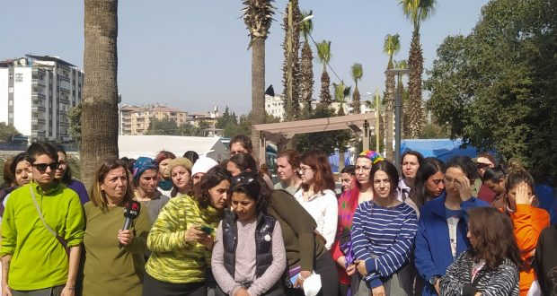
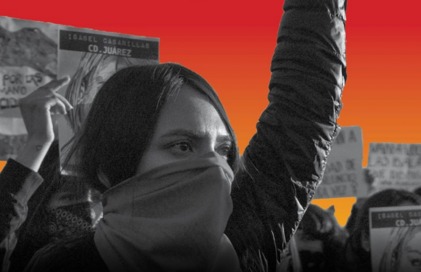
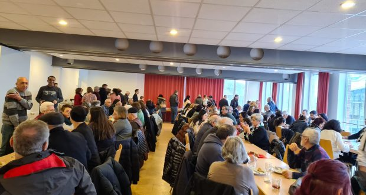

{kind=link}
 _我们发布了欧洲移民工作城镇协会Ageb的解释，该网站在网站上Avrupahaber已发表。
_我们发布了欧洲移民工作城镇协会Ageb的解释，该网站在网站上Avrupahaber已发表。
[This lan. PDF][This lan. ODT][This lan. MD][This lan. TXT][This lan. TXT LIST]
Please select your language 请选择你的语言:
作者: DEM VOLKE DIENEN
时间: 2023-02-28T00:19:53+00:00
图片: ['AGEB-Deuch-Afis--1024x720.png']
标签: ['Türkei', 'Erdbeben', 'AGEB']
类别: None
_我们发布了欧洲移民工作城镇协会Ageb的解释，该网站在网站上Avrupahaber已发表。
让我们在灾难和地震的破坏中招募团结!
我们要求大屠杀!
从2023年2月6日开始的地震，与震中的马拉萨(Maraş)造成了Inantakya，Osmaniye，Antp，Urfa，Amed，Amed，Malatya，Kilis，Adiyaman和Adana。 这场灾难和破坏也对叙利亚以北的Rojava Andim产生了影响。 成千上万的人死亡Beherdbieben，而数百万人无家可归。
在寒冷的天气条件下必须为生存而不得不为生存而饲养的人将使他们的命运留给他们的命运。 由于该州在书籍领域没有帮助并在现场几天到达，因此他让成千上万的人死于特朗普。 该州必须与地震地区的所有机构动员起来，使人们死亡和饥饿。 民间测试以自己的手段治愈伤口。 尽管步骤 - 顺便说一句，革命性和民主力量试图在现场提供帮助，但国家袭击了强大的囚犯，没收了辅助物品，并脱口而出地震区域。 通过受信任的分配，他们没收了由创建协调协调的辅助电缆。
统治阶级使地震未能发生灾难，试图通过没收自己的资源收集的资金来弥补获胜率的无助。 强大状态的膨胀图像已被破坏，因此该国家试图缓解这种情况以减少群众的反应，并增加死亡的侵略剂量和负压。 他不必提出问题的问题，而是忽略了求助的呼吁，受羞辱和威胁的教民。我们人民所经历的灾难，唯一的补救措施，是他们自己的团结网络的组织，以及现有的网络如此强烈，尽可能，以及公开呼吁将这种方式转化为权力并将他们带入质量的敏感性产生解决方案。
我们要求所有当地和移民工人对我们人民的问题和团结敏感。
作者: Movimento Feminino Popular
时间: 2023-02-28T13:19:00-03:00
标签: []
一月份，我们与国际无产阶级庆祝了斯大林格拉德(Stalingrad)80周年，这是第二次帝国主义世界大战期间对奥纳齐夫斯主义的巨大胜利的决定性事件。 从PC上完成的Docamorada Stalin伟大(b)我们，红军和被压迫的群众达鲁西亚以及来自世界各地。 社会主义优势的里程碑以及对帝国主义和世界反应的胜利的约束。 斯大林格勒战役的事迹充满了共产党人爱达斯·马萨斯(Edas Massas)的英雄主义。 这场战斗是第二次世界大战的转折点，这是法西斯主义者的伟大军事，政治和意识形态的失败。 他们和他们都被世界上所有革命者和民主党人所记住，因为共产党的博卡和大众在伟大的comradestalin的领导下。
我们从《罗莎·杜·波沃》一书中的卡洛斯·德拉蒙德·德·安德拉德(Carlos Drummond de Andrade)撰写的诗(1945年)和在ci-ic.org中发表的文章。
stalingrad
马德里和伦敦之后，仍然有大城市!
世界还没有结束，因为在废墟中
其他人出现，尘土和火药的黑色面孔，
和狂野的自由呼吸
扩张你的乳房，斯大林格勒，
他们折断和跌倒的乳房，
而其他复仇者联盟则崛起。
诗歌已经摆脱了书籍，现在正在报纸上。
莫斯科的电报重复本垒打。
但是霍姆罗很老。 电报唱了一个新世界
愿我们在黑暗中忽略。
我们在你的一个被摧毁的城市中找到了它，
在你死的安宁但不符合街道的情况下，
在你的生活安排中，比炸弹爆发更强大，
在您抗拒的寒冷渴望中。
知道什么抵抗。
当我们睡觉，饮食和工作时，抵抗。
当我们早上打开报纸时，你的名字(在隐藏的黄金中)页面上将是高个子公司。
它将耗资数千人，坦克和飞机，但这是值得的。
知道守望者，斯大林格勒，
关于我们的头脑，我们的预防和混乱的职责思想
让绝望的灵魂呼吸
并怀疑。
Stalingrad，瓦砾的悲惨丘，但是脱颖而出!
世界上美丽的城市惊讶和沉默地沉迷于您。在他们辉煌的大理石和无冲线河流中琐碎的琐事，
曾经荣耀的贫穷和谨慎的城市毫不挣扎，
与您一起学习火的手势。
他们也可以等待。
Stalingrad，有多少希望!
什么花，什么水晶和您的名字洒了我们!
您的房屋多么幸福!
在某些人中，楼梯上充满了身体。
其他燃气管，水龙头，一个儿童盆地。
没有更多的书可以阅读或在工厂工作或工作的剧院，
每个人都死了，中风，后者捍卫黑色的墙壁，
但是里面的生命是巨大而脉动的，就像阳光下的昆虫一样，
我疯狂的斯大林格勒!
我寻找的距离，询问，血腥的气味
我觉得您身体的拆除形式，
在您的街道上寂寞的路径，那里有轻松的手和派对手表，
我觉得你喜欢人类的生物，你是什么，斯大林格勒，但这呢？
一个不想死和战斗的生物，
在天空，水，金属，生物战斗中，
针对数百万的武器和机械工厂，生物战斗，
反对寒冷，饥饿，夜晚，反对死亡的生物战斗，
并获胜。
城市可以赢，斯大林格勒!
我想到的是城市的胜利，目前，这只是从雷维加(Revolga)兴起的烟雾。
我想到的是城市项链，他们会爱并捍卫自己的一切。
在您的钙化地面上，尸体腐烂，
明天的伟大城市将提高秩序。
在斯大林格战役中胜利80周年
2023年1月31日
来自所有国家 /地区的protectaries，团结!
苏联发动的战争以一种绝对正确的方式定义，是一场伟大的爱国战争，是一场公平的国防战争。 除了Gloriosae Herioica Defence，在斯大林同志领导下的苏联必须反对捍卫其领土，捍卫PatriaSocialist，这是2500万人的生命，而反帝国主义的斗争在国家中受到了极大的压迫。这一时期。
总统毛笔总统的思想公平，正确地：世界，阿塔尔法(Atarefa)现在正在动员各个国家的人们，并组织国际阵线来对抗法西斯主义并捍卫苏联，捍卫中国并捍卫所有瓦多姆的自由和独立性。”
世界各人民因正义的事业而升起，不仅在与轴心的战争中，而且对他们各自的采样主义者都散发出了珍贵，这开始了20世纪下半叶的巨大反殖民斗争。1942年7月下旬，斯大林同志是最高指挥官，亲自发布了227号命令，以提高牺牲水平，而武装部队在人民层面上奋斗的水平：
“ 敌人在不进行重大考虑并深入苏联，征服新地区，摧毁我们的城市和村庄的情况下向前推动新力量，违反，抢劫和杀死苏联的居民。 ，在南部以及高加索的北门。德国入侵者渗透到一个石林格勒，伏尔加河中，并以其油脂和谷物的含量捕获了库班和奥纳卡苏斯·诺特(Kuban)和谷物。在恐慌传播者之后，离开了Rostov和Novochercassk严重的学期，莫斯科没有命令，覆盖了他们的超级旗帜。**
我们国家的人口热爱和尊重红军，开始对它进行阿迪斯纳特，对红军失去信心，许多人诅咒红色的埃克里，因为将我们的人民留在了德国压迫者的锁下，甚至是向东行驶。 一些愚蠢的阵线被我们可以撤退到东方的话语使一些愚蠢的阵线平静下来，因为我们有很多领土，很多人口，很多人口，而且总会有很多面包。 他们想在前面稳定臭名昭著的行为。 但是这种对话是虚假的，仅对我们的敌人有用。此后，每个指挥官，红色和专员士兵的纪律律法是坚实的，应该是要求 - 如果没有更高命令的命令，就不是一步。 公司，团和司的公司 - 不命令撤回的指挥官和专员是家园的叛徒。 这些是我们瓦特里亚的命令。 执行此命令意味着捍卫我们的土地，拯救家园，灭绝并征服了讨厌的敌人。”
我们的英勇红色士兵最初有能力在斯大林格拉德北部的一系列滑雪中放慢Wehmacht Osavancos，提供了200,000多人的生命，并设法遏制了纳粹成群。它没有显示出来，而是抗拒，因此没有撤离超过400,000,000的居民城市。 男人和女人，甚至是年轻的男女都不合时宜地纳入了与战争相关的活动中 - 战斗，建筑，间谍，供应等。 即使详细的墙壁被持续的卢夫空爆炸或重型炮弹袭击打破了，人们也保持了自己的位置。
由乔治·朱科夫(Georgy Zhukov)和亚历山大·瓦西列夫斯基(Aleksandr Vasilevsky)领导的天王星行动在城市的北部和西部组织了俄罗斯军队。 从那里开始，他们发起了反击。 为了支付必要的价格，红军于1942年11月底围绕着城市，持有近30万德国和轴心士兵(主要是意大利人和罗马尼亚人)，在日益紧张的战争中扼杀了重要物资的敌军，并从本质上围绕着它们。
在斯大林格拉德(Stalingrad)附近，红军赢得了重要的战斗，其中包括距斯大林格拉德(Stalingrad)约400公里的唐·唐(Rostov-on-Don)。 因此，敌军被减少并散布在正面的那一部分中，斯大林格拉德(Stalingrad)西部的小土星成功。 有了男人，而不是武器，再次证明了马克思主义的原则是正确的，他们将入侵者勒死了死亡和有史以来最大的城市战争之战。 这不仅是一条街道上的一条街道，也是从房屋到地下室到地下室的一条街道，甚至不走路，而且每个房间都舒适，产生了最伟大的英雄主义，即站在世界的章节。我们都知道，我们必须记住，由纳粹领导的法西斯进攻，他们贡献了意大利和西班牙法西斯主义者，就像罗马尼亚人，匈牙利人以及使用所有征服的经济资源一样，他们扮演了数百万美元奶油德国人，在入侵中的75％。 但是，斯大林同志以非常微妙的方式明智地处理了授课。 值得注意的是，苏联情报系统服务的机智和反馈。 什么情报服务。 他们完全知道纳粹入侵的仇恨。
苏联采取了战略性的防御和破坏的地球，使它们超越了裸露的土地，泥土，灰烬和勇敢的支持者，并决心并解决了敌人的境地。 他们大胆地骑着爆炸了巨大的作品，例如连接沃尔加·唐的著名水坝，并花了很多年的努力。 德国人从未梦想过，不认为他们会爆炸这项工作，因为这非常重要且成本昂贵。
无产阶级的独裁统治受到威胁，革命受到威胁，我们不能停止思考，我们不能简单地让自己打扰毛泽东，因为毛泽东总统说，为土地的辩护辩护。 他们撞到了莫斯科和斯大林格拉德大门的列宁格勒大门。 但是，不仅举行了安排，而且游击队，甚至是带有步枪，弹药和伏特加酒的简单个人，都在等待敌人。要歼灭这些勇敢的英雄和女主人公之一，德国人失去了10个人。
法西斯进攻是一项非常高质量的军事计划，因此，高高而开明的德国军事首领阐述了这架飞机和德国学校的战争传统：三个月后，他们获得了苏联。
自1930年代以来，斯大林同志就已经采取了措施，因为人们一直在加重现场和行业的转型，已经为乌拉尔(Urals)转移了工厂，甚至预测了去莫斯科的可能性，因为这是真的，一切已经有效，即使他们无法捍卫莫斯科，即使这是决定，已经计划将方向和海洋移向乌拉尔。 因此，第一件事是安排列宁的归因，因为他不能落入地狱的孩子们的肮脏手中，他不能摔倒。这些是我们必须记住要享受斯大林同志的事情，必须参加第二次世界大战。 我们都知道，这是如何引起抵抗的，德国线的崩溃，德国指挥官斯大林拉多德的围困，希特勒本人命令他们不要撤退那些劣等的亚人类。 那些劣等的野蛮人，osmongols像老鼠一样追捕他们，他们不得不投降。
重申这一点总是很好的：斯大林是战争的熟练而明智的经理，一直考虑道德元素，并将所有纳粹派生，投降并扔给他们的旗帜，老鹰队，他们的老鹰，他们的swastika落入列宁的陵墓的陵墓pedo； 不仅是一次巨大的军事失败，而且是道德专业!纳粹傲慢被沉没在泥土中并践踏，这是它有史以来最大的道德打击，那是纳粹倒塌的开始。
1943年2月，斯大林同志分析了：“三个月前，红军明星几乎开始了他的进攻。从那以后，军事行动中的倡议仍然是情感上的手，陆军写作进攻性行动的节奏和攻击力量并没有得到减少。今天，在恶劣的冬季条件下，军队在1,500公里的前面写下进步(950英里)并几乎到处都可以胜任。 在北部，在列宁格勒(Leningrad)附近，中央纳弗(Naffer)，前往供捐赠者盆地的哈尔科夫(Kharkov)，位于罗斯托夫(Rostov)，阿佐夫海(Azov Sea)和黑海的纳斯玛(Rostov)，在对希特勒(Hitler)的袭击之后，红军从骗局中脱颖而出。 在三个月内，红军拥有敌人的Voronezh和Stalingrad地区的领土，自治的车臣 - 吉奇，北奥塞蒂亚，卡巴迪诺 - 巴尔克里亚·埃卡米克，
** [...]只有在1942 - 43年冬天，德国人在战场上损失了超过7,000炮台，4,000架飞机，17,000枪[...]不少于4,000,000。
[...]首先，德国军队的弱点是劳动的稀缺，因此，未知将取代哪些消息来源。 […]红军已成为军队的佩特。 […]来自红军的数百万人已成为武器的主人[…] 毫无疑问，只有陆军写作指挥的正确策略和我们执行该指挥官的灵活策略才能导致一个了不起的事实，例如在Stalinggrad的攻城和歼灭，一支巨大的德国人军队，总计33万人。 ”
我们的巴西同志指出：第二届全世界对法西斯主义的胜利是世界无产阶级进程的伟大历史事件之一，帝国主义领域已被深深地衍生，三个重要的帝国主义大国被击败-Alemanha，Japan和Italy-认真研究了正确的理解，必须强调和庆祝。
中国共产党在评估这一历史经验时说：
“ 首先，反对法西斯战争的历史表明，社会主义制度具有巨大的活力，可以抵抗最严重的测试，而无产阶级的独裁统治状态是无敌的。
*其次，反法西斯战争的历史表明，介绍主义是现代所有战争的根源，帝国主义的跨性本性不会改变，因此，为了捍卫世界和平，有必要坚持反对帝国主义的斗争。 *
第三，反对法西斯战争的历史表明，术语肯定会取得胜利，有可能击败完全帝国主义的侵略者，帝国主义是一只纸质老虎，受到强者的影响，但实际上它是弱者，虚弱的，很虚弱的，而且，A原子弹也是纸虎，是欺骗战争结果的任何阶级的人民而不是武器。****
第四，反法西斯主义战争的历史表明，对于帝国主义侵略者，必须依靠所有国家的人民革命力量的统一，以吸引可以征服的各个方面在我们这一边，尽可能地形成国际范围的单一阵线，并将我们的打击集中在世界人民的主要敌人身上。 ”
News Source: https://brasilmfp.blogspot.com/2023/02/viva-o-80-aniversario-da-batalha-de.html
作者: Movimento Feminino Popular
时间: 2023-02-28T15:30:00-03:00
图片: []
标签: []
帝国主义
后现代主义在世界帝国主义第二次世界大战之后的时期成为资产阶级的哲学潮流，在战争中，尤其是在第20 pcu国会后，克鲁什夫德斯蒂尔斯(Krushevdestilas)仇恨仇恨时，在面对战争造成的不幸之后，在智力上被屠杀的悲观主义。同志和大元帅斯大林(Stalin)发起了各种类型的谎言，目的是达到社会主义并恢复苏联纳普里亚的资本主义。 法国哲学家让·弗朗索瓦·利奥塔德(Jean-FrançoisLyotard在1980年代至1990年代之间的大学中，特别是在大学内。 在此期间，俄罗斯社会帝国主义的崩溃使美国成为世界上帝国主义的霸权超级能力，以及柏林墙的倒塌，事件笑着传播为所谓的“社会主义失败”或“结束”现实的社会主义”是发动帝国主义进攻，融合的束缚和教会的基础。随着世界进入“新世界秩序”，这种进攻被坚持不在地卷起，其中“全球化”将会在其中进入“全球化”意味着兄弟会之间的扩张减少了国家和富裕的宣布“历史的终结”，资本主义肯定是最后一个社会疾病的存在。对于后现代主义者而言，所有解释性质或人类的解释方式都是有效的，因为对现象没有客观真理，只有不同的观点或对它们的不同“论述”。 因此，与人类对敏感性和社会的知识的可能性以及量量的量相反，后现代主义仅捍卫了存在的主观“话语”，例如本地和始终“偶然”的观点。(不稳定，临时)，达到理想主义和主观相对论的极端。 语言转到大多数后现代主义者的中心，因为他们的话语构成了我们所谓的现实。 因此，“策略”后现代政策归结为旧州和微观主义的“文化和身份需求结合的碎屑”，集中评估术语的变化，或者同意，开放和流体的“辞职”概念“概念”概念“概念”概念“概念”，转移到战斗群众，其中包括人民的妇女的概念转移到单纯的“话语争端”或“解构”和“辞职”的领域。
个人主义 后现代 ta **和帝国主义但是，对于“后现代主义者”，任何需要个人，个人利益的情况，他们都认为他们是不可接受的“暴政”和“极权主义”，而对Mesquinhos的欲望和对梅斯奎因的欲望和群众的服从世界上少数几个人被归类为“ _ liberdade_”。 实际上，这是帝国主义资产阶级的唯一自由(和您的后现代辩护律师)倡导者：个人的利润(伟大的资产阶级和其他统治班级埃克拉罗)探索绝大多数人(就像在奴隶制中一样，它继续被视为没有_ alma_或个人的生物).
所谓的“ options_和“ _livre select”的宣传，“ _ ser you”， viver as way _ _ _ _ _ _ _ _ _ _ _ _ _ _ _ _ _ _ _ _ _ _ _ _ _ _ _ _ _ _ _ _ _ _ _ _ _ _ _ _ _ _ _ _ _ _ _ _ _ _ _ _ _ _ _ _ _ _ _ _ _ _ _ _ _ _ _ _ _ _其他_liberd个人 _ _ _ _ _ _ conquist of个人身份”，这种身份始终是“ fluid and variable” \ - 这是实现主题的最大值。 人类不再是一个社会存在，就像马克思对马克思分析的真正深度分析一样，成为后现代的“ 个个体化” - 无论需要什么!但是，让我们看一下：这是帝国主义的制度本身，赋予人们对人们的意识形态压迫的态度，因为在传播他们所谓的“个人自由”时，它只试图隔离群众，以表明他们极端侵犯权利的腐烂制度人民有更多的人。 甚至某些后现代强 - 强制的意识形态都接受，这种自由受到社会状况的限制，但他们不承认不可避免的是：现在，先生们，如果个人的“自由”并不能以我们社会的同样方式逐渐地对待所有人(对于马克思主义和明显和基本的问题，既然我们生活在一个社会中的社会声明中)，结果是，群众会以更大的阶级愤怒转向您，因为鼓励周围主义和其他社会徒劳的价值观成为来源，也质疑您不得不努力证明和捍卫同样的顺序。尽管您传播了“ topos-truths”，其中_versons_falls比_proper__fatos_更重要，并且跟进涉及二十世纪民主和社会主义革命的群众的成就，他们将无法将现实无效。 ，删除-la或阻止她发展。 因此，他们试图制造纳粹约瑟夫·戈贝尔(NAZI JOSEPHGOEBELS)，“反复的谎言将被广泛转变” \ - 被苏联人和反法西斯主义的抵抗击败。 以及试图通过发明伊拉克存在大规模化学武器的骗子的借口来进行“布什·菲利奥”，以及整个垄断的剥夺，以证明其帝国主义的入侵合理，并由伊拉克国家抵抗来起草； 他们尝试了Otrump Bravateiro和他的年迈的右责任追随者，以对人民进行反动政变，也失败了。他们以“没有普遍的真理”，“没有普遍的真理”，“没有普遍的真理”，“没有普遍的真理”，“没有普遍的真理”，“没有普遍的真相”，他们给予弹药和理论上的理由。 “表演话语同样可以接受”，而“无限的个人主义”，但对反动资产阶级，法西斯主义和帝国主义的立场!
享乐主义和后现代主义者的虚假性自由我们对人民的革命妇女以及我们班级的管理男人的作用，应与身体和性对象和商品的使用以及“后现代”谬论“谬论”作斗争(从旧希腊古代的废墟中重新发行)为了捍卫人们之间的最高关系，以仅从宜人的个人获得，而没有反思后果，尤其是对于正在扩大的享乐主义实践，目前帝国主义强烈刺激了。 男性一夫多妻制和女性卖淫是阶级社会法律中私有财产出现的直接后果，在我们的时代，在新旅行中加剧了，我们不会与她们与女性“ Polyandria”或任何性别作斗争，女性的后现代女权主义者是女性的“自由卷轴”，因为在剥削社会中，男女之间没有真正的平等!这种享乐主义的做法是后现代主义和帝国主义的生动主义。 我们的群众和特定的无产阶级，我们捍卫了与奥米万利在所有表现中作斗争的关系，要么以“ _ _每个”或情感和情感关系激发的自私，要么是在自私的表现中，要么在情感和情感的关系中。 Nossaclass，为这个古老的探索和压迫社会的深刻转变而进行了艰苦的斗争!人民之间相互承诺，团结，尊重和无产阶级忠诚是达克拉斯革命道德的一部分，而不舒服，冷漠，可支配的人使用(虽然据说是倒数!)，它们是与此相反的，而群众则是群众，尤其是新的，真正的根本性变形的渴望青年，并为破坏旧的苦难而奋斗。
f 后现代主义的阿美主义 和 旧资产阶级改革 在妇女运动中，影响是同样的意义上的，是一种“新的”后现代主义改良主义，它主要定位在所谓的“身份政策”的防御领域中“ _ 男性语言”，__特别影响了小资产阶级和我国大学环境的年轻人。 后现代女权主义因此，通过“辞职” Dossignos对社会变化的幻想(术语，单词)，据说应该导致女性的“ _ mpoderamento”。 这个职位的一个明确的例子称为“瓦迪安游行”，在那个职位上，对妇女的平庸的诅咒给了一个游行，他们开始自行自我题为bit子，以修改“ bit子”一词的社会含义的骗局，以一种假装对大男子主义的抵抗活动是后现代女性主义者最“革命性”的行动!
一些后现代女权主义者试图合并“语言辞职”的立场，该立场的重点是具有新意义的“认可”，并带有所谓的“平等社会政策”。 还有，这是什么？ 仅在同一探索系统中被“ _ _ redo -distributivatives”称为“ _ _ _ Redo -distributative_”，即帝国主义本身鼓励的常见政策(通过非政府组织和碎屑的公共政策)，作为减轻其衰落领域的社会紧张局势的一种方式 - 并且没有解决任何问题，没有任何问题每天影响人们的妇女!因此，这种“政策”的防御者受到机会主义和修正主义的影响(在体育馆及其“行为准则”中，这很好地服务于后现代主义)，通过无法否认世界上社会不平等的问题，他们在结束女性压迫的任务中无法进一步 - 只有在帝国主义统治系统结束和建设的终结中才能实现这一任务社会主义在整个Omundo，阶级社会结束时，共产主义的指导。另一方面，在资产阶级资产阶级女权主义的所有其他潮流中，后现代主义女权主义都将“男人”或“赫性男性气质”确定为与“女性”或“女性气质”有关的主要反植物。 例如，澳大利亚社会学家Raewyn Connell肯定了“所有女性都在从属于霸权喷雾的位置”。 对于南希·弗雷泽(Nancy Fraser)而言，“雄性中心主义”将是一种形式，因为男性气质将自己强加于一种主导的文化标准，即“一种文化价值的标准，它具有特权与男性气质相关的特征，同时将所有与'女性''编纂的一切贬值。
这样，后现代主义的女权主义最终再现了妇女的斗争是对男人的旧岛屿。 他们说，他们不寻求女性压迫的原因和年龄，实际上，他们分析了这是鼻孔的(习俗，文化模式，家庭传统，情感和性关系等。)它的原因，特别是在“男性统治”和“男性”有关此类标准的定义中，忽略了阶级社会中女性压迫的全部特征。 但是，他们无法回答：为什么这种做法历史上以这种方式而不是其他方式构成？ 即使他们不是“本质主义者”，后现代的女权主义者也无法否认他们最终陷入了“男性气质”的逻辑中，因为_causal_ dopression对女性来说，这只是一种新的关于“上等自然男性性质”的反动理论的新形式。和“女性天性”……逃避辩论并掩盖自己的立场，就像巴特勒一样，“女性的从属不具有独特的案例或独特的解决方案_”以及解决妇女压迫的解决方案! c 的崛起 帝国主义与失败 后现代主义
在其中道歉导致所有“ _ verities_或“ discursos”的有效性的文化相对论)同样合法，而没有批判性判断的可能性(无论是从社会，政治还是道德观点)？ 纯粹的虚无主义和对青年的一部分缺乏观点，这一现象严重寻求，尤其是在最大的帝国主义野兽的中心(考虑到多塞亚学校的儿童和青少年的反复屠杀)此外，个人主义的享乐主义和拼命地寻找个人愉悦感，否则从开放和宽容到法西斯立场的成长，因为是他们的个人权利捍卫他们的反动立场和反击情(毕竟，不仅是从另一个“话语”角度来看的宗派？).
Em contrapartida, o espectro do comunismo volta a rondar o mundo emcrescimento e radicalização das lutas das massas por seus direitos, totalmentedesacreditadas nas instituições burguesas e burocráticas do velho Estado, daslutas de libertação nacional e nas GP's sob direção ora, vejam, doproletariado (对于后现代主义者而言，这种班级从来没有存在过!)通过他们的共产党传销。 波波沃的妇女正在动员所有这些斗争的前线，与同学对抗资产阶级，房东和帝国主义统治，并捍卫世界无产阶级革命!
News Source: https://brasilmfp.blogspot.com/2023/02/pos-modernismo-e-feminismo.html
作者: Revolución Obrera
时间: 2023-02-28T21:07:39-05:00
图片: ['2.jpg']
标签: ['Comité Internacional de Apoyo a la Guerra Popular en la India', 'Estados Unidos', 'guerra imperialista', 'Guerra Popular en Filipinas', 'Guerra Popular en la India', 'Rusia']
类别: ['Movimiento Comunista Internacional']
 参加印度共产党的电话(毛主义)国际委员会支持印度大众战争(ICSPWI)，在哥伦比亚，2月24日在美国大使馆前举行了一次集会，由来自不同工会组织的工人参加了参加共产党联盟国际主义者Obrerabrera的国际化组织。(传销)我们这些感谢您参与此活动的人。
参加印度共产党的电话(毛主义)国际委员会支持印度大众战争(ICSPWI)，在哥伦比亚，2月24日在美国大使馆前举行了一次集会，由来自不同工会组织的工人参加了参加共产党联盟国际主义者Obrerabrera的国际化组织。(传销)我们这些感谢您参与此活动的人。
同样，革命工人也参加了国际倾听。我们发展了与帝国主义世界战的革命斗争!由来自不同国家的几个共产主义者和组织签署，并在哥伦比亚和国际上被称为政治和政治统一，以向革命展示帝国主义战争的准备。
作为当天准备的一部分，在国际联合束缚和商定的海报之前的几天是在几天之前传播的，与此同时，工人的先锋计划致力于解释动机此呼叫。
我们希望继续履行国际主义对我们状况的承诺，在该国的无产阶级和角落群众之间传播革命性地反对帝国主义战争的重要性，支持印度和菲律宾的流行战争，并进步国际联盟运动的统一。
News Source: https://www.revolucionobrera.com/internacional/mci/guerra-imperialista-3/
作者: socialistiskrevolution
发布时间: 2023-03-01T04:00:00+00:00
修改时间: 2023-02-26T20:08:10+00:00
描述: 我们收到的文件说，横幅已挂在Tingbjerg和Hoge Gladsaxe之间繁忙的道路上的一座桥上。 横幅有朋友诺拉（Norah）的肖像，并在ga上有parols»。
图片: ['1-5.jpg', '2.png', '3-5.jpg']
类型: article
类别: ['Uncategorized']
我们收到的文件说，横幅挂在一座桥上的桥梁和Hoge Gladsaxe之间的一条繁忙的道路上。
横幅有玛拉伴侣的肖像，假释“ 3月8日在街上!”，“反对帝国主义和父权制!”和“为革命性的妇女运动!”。


 广告
广告
News Source: https://socialistiskrevolution.wordpress.com/2023/03/01/kobenhavn-banner-for-8-marts/
作者: SERVIR AL PUEBLO
发布时间: 2023-03-01T09:06:59+00:00
修改时间: 2023-03-01T09:06:59+00:00
描述: 几个月前，即2022年11月28日，第一次大会在阿尔贝塞特革命委员会召集的阿尔贝塞特（Albacete）的Chabolista定居点举行，以提供一个opor ...
类型: article
03/01/2023
几个月前，即2022年11月28日，第一次大会发生在阿尔贝塞特(Albacete)的chabolist定居点，由阿尔贝塞特(Albacete)委员会召集，为失望的移民提供了一个组织的机会，这些移民在这几个月的特殊放弃和孤独中为解决方案而哭泣。由于寒冷，由于缺乏工作而导致的强风和沉降。
民主上，风暴能够权衡其最直接的问题，谁是犯罪的敌人。 如今，问题本质上是本质上的，但是未来物种的种子已经越来越多，这不再与富有工具组织的活动或机构的行动相关，而机构的行动似乎只想提供遥远的警察控制，而这种控制从未受到保护。给定居点内的邻居，但一直在镇压和侵犯私人。
这些几周的暴风雨在城市中有宣传在城市中的阶级团结，这可以定义为提高其生活水平的首次有意识的运动，在这种情况下，即使只有最小的欲望才能携带一系列的食物出去，比慈善组织所承担的更有效。
定居点的最后一次大会是在本周六举行的，他在其中发表了有关如何在接下来的几周指导他的工作的特别辩论。 缺乏光线，卫生和识字是有些问题，这些问题可以防止人类的生命和在社交学校起作用的适当融合，以前将问题视为遥远解决方案的地平线，如今，它们被作为目标的目标。被压迫的群众群体安排了您的任务，这仍然是迈向完成历史压制的一步。
在接下来的几周中，行动将开始继续继续执行闪光和清洁任务，并阻止解决方案中缺乏健康的问题。
在资产阶级国家的虚伪之手面前需要阶级独立的必要性，这一天可以作为一项权利发生，但是，这一天可以成为敌人，永远不会是一种不锈钢形式我们的斗争。 他说：“如果我们想要什么，我们接受。”

 商业的
商业的
作者: hp
时间: 2023-03-01T09:42:34+04:30
图片: []
=====页面000001 ========
以前，在过去的81个月中，由于塔利班的统治，贫困，饥饿和流离失所，该国已经前所未有地增加了。 但是，塔利班通过拍卖该国的煤矿并从其店主和商人那里收取税款，使他们陷入了破产，在阿富汗人民死于饥饿和贫困的情况下，他们以这种方式赚钱来建造清真寺。宗教和迷信极端分子的酸味消费。 在塔利班上占主导地位，该国的废墟比以往任何时候都要多。 阿富汗病房中妇女和人民的不幸局势使一场激进革命比以往任何时候都更加必要。 但是，阿富汗人民当然发现至少在塔利班的塔利班居住很困难。 但是，这种人们对社会的理解水平必须被提升到更高的理解水平，即资本主义和伊斯兰原教旨主义阶级的本质。 没有革命性，没有组织和革命组织，社会上的转型和革命的必要性就无法得到回应。 妇女必须在一项激进计划下努力为自己的团结和团结而努力，并在该国一个民族和秘密组织的国家进行茶点。 妇女运动对于促进政治知识是必要的，因此可以侵犯其有限的身体。 使用妇女名称和组织工具的使用必须结束。 为了在该国建立强大而强大的女性运动，有必要建立一项运动和一个由最认真的女神奇干部和领导人的秘密组织领导的守则。 共产党成员和干部(毛主义)阿富汗认为自己是阿富汗妇女运动和革命的一部分，他们毫不犹豫地促进这一运动。 没有妇女斗争运动的发展，民主革命的胜利和建立社会主义社区是不可能的。 我们的政党认为，如果没有激进的斗争以及民主和社会主义革命的胜利，就不可能摆脱阶级压迫和剥削，除了妇女囚禁的力量之外，对统治制度的任何敬意都会导致任何事情否则。 为了摆脱这一点，需要革命。 基于共产党的革命是(马克思列宁主义者)工人班和劳动者的党派是基于的。 共产党(毛主义)阿富汗0202-8028 3月1日
=====页面000002 ======
News Source: http://www.sholajawid.org/farsi/shola/file_shola_d4/8Mar23.pdf
作者: Revolución Obrera
时间: 2023-03-01T10:13:07-05:00
图片: ['118501188_lamona.jpg', 'Mujeres-PR.jpg']
标签: ['8 de marzo 2023', 'Cali', 'Emancipación de la Mujer', 'Estallido social', 'feminismo', 'levantamiento popular', 'paro 28A', 'Puerto Resistencia']
类别: ['Emancipación de la mujer']
 >“任何知道一些历史的人都知道，没有女性发酵的情况，巨大的社会变化是不可能的。”
>“任何知道一些历史的人都知道，没有女性发酵的情况，巨大的社会变化是不可能的。”
我们生活在一个因所有问题加剧而抽搐的资本主义社会中，因为它们的存在的原因是资本的利润，将地球和人类带到死亡的边缘，使工人的体重和农民的体重和decade废的重量这样作为猎物，饥饿，痛苦和压迫的拉格人。 影响职业妇女的情况被双重剥削和被压迫。
在整个历史中，妇女在巴黎公社，俄罗斯的伟大社会主义革命，中国的新民主革命，在不同的反帝国主义的新民主革命中发挥了领导和决定性的作用。 目前，在印度，菲律宾人和土耳其等的流行战争中，处于抗拒之抗中。 在哥伦比亚，自从西班牙入侵者与西班牙殖民主义的独立战争中，妇女在与征服和征服土著人民的征服和向土著人民提交的情况下，妇女也占据了拆除，在工作中，农民，土著，非洲 - 殖民 - 殖民斗争.. 。以及在社会转变的革命斗争中。
而且由于它几乎不自然，它参与了4月28日开始的社会爆发，为那些为不可避免的对抗做准备的人。
妇女在发展不同形式的组织和娱乐性，教学活动的发展方向和发展与乌里比亚斯黑手党政权及其武装部队的斗争方向和发展方面一直是主角。
处于不同组织形式的最前沿：2020年8月，对兰诺·佛得角(Llano Verde)的年轻人进行了对年轻人的大屠杀，这给了他们在2021年大爆发的准备和经验中增加的愤怒和痛苦。
第一行的角色是在4月21日开始流行的起义，其角色在捍卫社区和对抗中的对抗中，然后是准军事人员，一方面，一方面，女性在平等旁边战斗，一方面是捍卫社区和对抗的角色。男人 但是，此外，Porotro这是组织系统的一部分，该系统是作为具有不同功能的战斗机参加的，其中从第一到Quintinine进行了划分和专业化。 这些妇女从第一线参加了国防和对抗的比赛，并且在第四线中也扮演着必不可少的角色，这将是负责受伤的救援和注意力的医疗任务。 妇女是主要力量和战斗进程所依赖的不助长的，因为如果没有医疗护理，就不方便对抗对抗而且只有医务人员才能促进同事的生活。
同样，妇女在第五线中的作用，负责收集食物，木材收集，石头和维护社区以保证三餐和持续的水合；可以说，它们是维持维持能量的脊柱战斗人员的军队，如果没有，与卡利(Cali)相比，24/7的工作没有维持社会阶段。 社区工作是为阶级敌人成为Undelito的社区工作。在那里，他们有人类的温暖，即社会暴发的母亲和姐妹说。
朝着运动方向前进
除了物流，维持炉子，做出决定以养活抗议者的决定，妇女还自信地填补了战斗人员，因为人们认为发展的斗争对于改变伦巴杜尔国家并为人民的孩子们拥有更美好的未来非常重要。例如，例如，第一年是在玛丽亚·伊莎贝尔·乌里鲁蒂亚(MaríaIsabel Urrutia)体育馆与市长办公室一起进行的，这是第一线的年轻女子，他们命令会议被暂停，没有任何保证同伴的安全。 重要的是要强调这一点，因为它在资本主义社会中委派的“次要和责任”的特征或作用被转变为女性决策的倡议，并对战斗机和战斗人员和社区的照顾负责需要改变对人民行事的犯罪制度和政府产生的弊端。
他在司法辩护和保护战斗人员作为人权活动家和律师协助方面的贡献也很棒；他在爆发期间为国家恐怖主义受害者组织一个心理护理大队也是他的倡议。
他在媒体上的工作是为了阐述公共传播和投诉，发展交流和传播策略的典范。 从国外通过社交网络发展的工作，以向他们宣传斗争的原因以及国家对抗议者的虐待。
他们还通过现场广播Porfacebook担任记者，突出了德国同伴Rebeca Marlene Sprober表演，积极参加街头斗争，然后是伴侣的灵魂，她是Mafia政权遭受迫害和驱逐出境的受害者。
 在鼓励斗争和移动的艺术和文学的最前沿
在鼓励斗争和移动的艺术和文学的最前沿
在这首歌中，太平洋唱歌同伴强调了在各种抵抗点上意识到演讲，通过领导谋杀案，失踪和驾驶员在抗议期间遭受的虐待来提高声音。
Manizalita歌手劳拉·伊莎贝尔·拉米雷斯(Laura IsabelRamírez)被称为“女孩”(The Girl)，她的歌_ no azara!他们在壁画中以同样的方式脱颖而出，在不同城市中为国家恐怖主义和对战士的动机驱散而创造了一系列谴责的壁画。
结合起来，诸如班上的农民或小型资产阶级的一部分，在坎波7中毁坏的辩护人，卫生，教育和住房都包含在国家所需的一般拉普拉特特征的点中。 但特别是有许多自己的观点，例如：
拒绝反对人民的反动战争，妇女称之为最糟糕的部分，他们失去并继续失去学生和孩子。 因此，这一要求使这一口号“妇女不放弃或锻造战争的儿子”。
反对虐待和性暴力主要由妇女和警察实行，使妇女成为妇女。 对于Ellodemand，在口号中反映出的更多安全和集体护理“国家不照顾我，我的朋友们照顾我。” 而且您不能忘记案件和性虐待案件，尤其是AlisonMeléndez的案件(政治的女儿)由于他是埃斯玛德凶手的虐待而自杀的。
减少军事预算，拒绝强制招募和强制性兵役。 作为在社会爆发期间特别解释的女性，城市的非军事化以及基于保护战斗人员生命的埃斯马德的拆卸。
值得注意的是，鉴于野生警察的虐待和大多数暴力案件案件的有罪不罚现象，妇女组织为抗议者提供了建议，例如Theothephonic和WhatsApp线，(紫罗兰)，协议，安全路线，解剖和自我保健指南。 他最有代表性的口号是：“如果他们碰到一个，我们会回应所有人”和“不再对妇女进行暴力”。
妇女的力量和坚定将有助于最终的资本主义，它们是建立新世界的种子：社会主义。 他们必须征服天空的一半，为此，他们还需要一个妇女的组织来帮助她们履行其使命，因此呼吁是克服革命性的女性运动。
News Source: https://www.revolucionobrera.com/mujer/mujeres-6/
作者: prolcompal
描述: 帝国主义是战争！ 帝国主义是世界划分的战争，也是播种死亡和摧毁的原材料的控制...
时间: 2023-03-01T12:47:00+01:00
图片: ['coltan5.jpg']
帝国主义是战争!帝国主义是为了划分世界的战争和对播种死亡和破坏的原材料的控制：每天以一种或另一种方式确认这种科学肯定，他感觉到世界各地。
 Miniera of Coltan
Miniera of Coltan
1月26日的一篇文章说：“乌克兰和刚果之间的联系不仅是理想的选择。” “众所周知，基辅多年来已经出口了大湖区国家的数量武器。”
刚果民主共和国发生了一场战争，大众媒体甚至没有这样做。 一场战争“三十年来至少造成了600万个住宅 ...一场由巨大的西方利益引起的非洲悲剧，与珍贵的矿物相关：黄金和钻石，但也是钴，对于汽车电池来说是必不可少的是电子ICIRCUTES的coltan。” **
“矿物质，但也是木材和石油，但人口的70％是贫困门槛，三分之一的饥饿感中有1人，预期寿命占59岁……”在107个非政府组织的新闻发布会上，通过为自己的财富分配财富»(包括Agesci，Libera，XXIIII社区，Pax Christi，停止战争，步伐网络Dismara)在新闻联合会的总部(fnsi)."
"E ulteriori interessi internazionali suscitano i giacimenti petroliferi nelParco dei Virunga, patrimonio dell'umanità. Per ora bloccati dall'Unesco."
Una guerra che oltre ai morti vede più di un milione di profughi "fuggitiall'estero, 5 milioni e mezzo gli sfollati interni , mezzo milione iprofughi in Congo dai paesi vicini " e sulla quale 107 Ong hanno chiesto aimass media, con una lettera, di puntare i riflettori!Mezzi di comunicazionidi massa che invece continuano a non interessarsene affatto!Questo "embargodi notizie" come lo chiama Mpaliza, questo silenzio "conviene a chi hainteressi in Congo: Stati Uniti, Europa, Cina e vicini come Ruanda eUganda, come dimostrato da rapporti ufficiali".
关注帝国主义国家媒体的沉默也涵盖了非政府组织和激进主义者的害羞，例如“修订欧盟2017/821关于矿物可追溯性的监管”一项法规，除其他外， * “它不会赢得钴**”。 其他请求尚未得到答复：“在1993年至2003年之间的617次犯罪中，建立国际犯罪部门和真相与和解委员会。”
检察官发生的另一场战争不断被助长为“ Micheline Mwendike，刚果作家和激进主义者：”欧洲机制的欧盟 欧洲国防机构 _，20222年12月1日，20022年4月1日投资了2000万欧元，以支持卢旺达人陆军根据“反恐怖主义战斗”进行“设备和航空运输”。“这是相同的机制，返回乌克兰和刚果之间的联系，欧盟用来向乌克兰发送武器。”
News Source: https://proletaricomunisti.blogspot.com/2023/03/pc-1-marzo-limperialismo-e-guerra.html
作者: prolcompal
描述: 四天前，在Priolo的Isab-Light上发生了爆炸，随后发生了一场大火，袭击了一名现年58岁的工人Rico ...
时间: 2023-03-01T14:00:00+01:00
图片: ['incendio-raffineria-lukoil.webp']
 四天前，在Priolo的Isab-Light上，发生了一次爆炸，一场大火袭击了一名58岁的工人，目前在脸部和航空公司的二级和三级烧伤中住院。在了解发生的事情的过程中，轻松的“调查”告诉我们，不幸的是，这不是第一个，也不是最后一次“事故”，简而言之，猖ramp的地方和事故没有任何安全性死者每年是数千人。 证实了另一个战争，这是资本主义对工人和工作的日常战争……这场战争也使工作场所处于危险之中。
四天前，在Priolo的Isab-Light上，发生了一次爆炸，一场大火袭击了一名58岁的工人，目前在脸部和航空公司的二级和三级烧伤中住院。在了解发生的事情的过程中，轻松的“调查”告诉我们，不幸的是，这不是第一个，也不是最后一次“事故”，简而言之，猖ramp的地方和事故没有任何安全性死者每年是数千人。 证实了另一个战争，这是资本主义对工人和工作的日常战争……这场战争也使工作场所处于危险之中。
在这种情况下，这些发展将在Corsodella Lukoil中进行销售，该游戏正在围绕该游戏，政府，银行，商人...(请参阅：https：//prottaricomunisti.blogspot.com/2023/01/pc.11-genio-raffineria- isab-di-priolo.html)根据IL Sole 24矿石今天的说法：“最后一次会议在昨天前一天在罗马举行了阿帕拉佐·奇吉(Apalazzo Chigi)。这是锡拉库斯工业区Priolo Isab炼油厂的伊尔法罗(Isab)炼油厂的决定性会议。”
在这次会议上。“签订了属于俄罗斯的ISAB炼油厂达成协议的塞浦路斯公司Goi Energy的领导人，会见了So称为“金黄色电力委员会”的成员，总理的技术人员的伊利格罗普(Ilgroup)出于Delgoverno行使黄金力量的目的，占据了技术评估。”
也希望在大约10,000名工人的“保护”中，希望正式担保的正式担保，以挽救法庭上的面孔。“ ...现在预计技术人员的评估结果在3月27日：在协议签署的Dagoi Energy签署的截止日期之前的三天(董事会主席您所学到的也是乌克兰的荣誉荣誉)几周前。
考虑到附近的基于西戈尼拉(Sigonella)以及所有这些商人的奇怪交织：_“然而，实际上，奇怪的相互交织，事实上，事实上，事实上，事实上，事实上，事实上，事实上，事实上，事实上，事实上，事实上，事实上，事实上，事实，即使没有明确地说，事情也可能不会那么顺利。所有者的报纸说 - 在Goi的竞争对手正在进行的行动中，他会打过其他卡片，以阻止将炼油厂的出售出售给游戏中。” _是寻找术语的扩展：”。 。(金融官僚机构)达成最终的交易。”
“这项交易是从接近谈判的来源中学到的，在财务方面的价值为1200万欧元，这是通过实施银行财团来评估的。( Banca Intesa，花旗银行，德意志银行).
News Source: https://proletaricomunisti.blogspot.com/2023/03/pc-1-marzo-lukoil-priolo-operaio-ferito.html
作者: Revolución Obrera
时间: 2023-03-01T15:30:00-05:00
图片: ['Ohio.jpg']
标签: ['Estados Unidos', 'Huelga de los ferroviarios', 'Norfolk Southern', 'Ohio', 'Tren descarrilado']
类别: ['Medio ambiente']
*更新了2023-03-01
 在东巴勒斯坦出轨火车(俄亥俄州)美国
在东巴勒斯坦出轨火车(俄亥俄州)美国
俄亥俄州灾难在美国发生的俄亥俄州灾难发生在2月3日，这是由诺福克南部公司(Norfolk Southern)的火车出轨造成的，尽管失败了自然与人类的资本主义系统犯下的犯罪链中的另一个Estelabón，尽管失败了事实，两个星期后，世界知道东巴勒斯坦居民今天生活的噩梦(俄亥俄州)美国。
诺福克南部是美国最大的铁路公司之一，负责提供负载运输服务，在哥伦比亚省特区的22个州旅行34,600公里的路线，该服务是所有大型容器的服务在美国的东部，它还与加拿大的布法罗和奥尔巴尼Haciatoronto和蒙特利尔有联系。
东巴勒斯坦的出轨列车由150辆货车组成，这些货车将乙烯基氯化物运输为高度易燃，有毒和爆炸性物质，是PVC管制造和塑料的原料。 乙烯基氯化物在高浓度中暴露时会影响人类中枢神经系统，导致肝脏，脑，肺和血液癌。
为了防止有毒物质停在地面上，公司将是“受控的燃烧”； 当燃烧乙烯基氯化物时，两种气体被分解：氢和氯化物，后者在第一次世界大战期间被用作令人窒息的武器，以便在战es中进行物理消除士兵，这就是他们在俄亥俄州所做的，一次轰炸了一个用化学物质打开Viaphérrhea的小镇!根据5、10、15和20的专家的说法，尽管官方媒体和政府试图否认他们对环境损害的损害，但由于计划污染的水污染，数百人将出现在癌症中。俄亥俄州的出轨是在不同州发出的一系列事故的一部分：2020年2月，一名火车爆炸了一列火车，这是一列从吉恩塞伊(Guerneseey)到萨斯切温(Sascatchewan)的火车，在接下来的一周中，塞德斯卡里洛(Seddescarriló)是肯塔基州的Seddescarriló 。 在过去的5年中，匹兹堡发生了八次出轨。 官方国家报告说，每年减少1,700次。 同时，自2014年以来，工人将这些条件分为12个工会； 2021年，国会被反对记录工人Sinembargo谴责的风险，美国政府尚未采取事故采取措施。
至于诺福克南部的公司，众所周知，在流通的Paramanter政治家贿赂火车舰队，其制造机械系统的生产可以追溯到1860年，目的是隐藏运输的有毒和易燃化学物质的目标迫使他们的员工在作家中工作，并允许不安全的条件在大规模解雇运营商方面工作。
美国铁路垄断地提取了最大的Degananc利润率，比任何其他剥削行业的劳动力都要多，超过50％，因为该州允许他们粗心地对LainFrastructure进行粗心大意，并无情地窃取了铁路工人，拒绝付费，并付费，以便只有一列火车，以至于只有火车乘搭火车。 2017年，他减少了五分之一的工作。
为了使这些对工人的美感，这些“现代”的资本家盗贼糟透了，得到了官僚机构土著，民主党和共和党的支持。 当去年年底，乔·拜登(Joe Biden)总统在民主党国会议员的支持下禁止多个集团召集的铁路罢工，并允许对雇主征收合同； 工会工作支持这些措施，作为其班级政策的一部分。 这就是美国帝国主义如此之多的摄影民主国家，这是信息贩运者的大量时间脸红，并由政府重复。与他们必须前进和叛逆的五大洲的工人阶级一起，这是公平的，因为在这个古怪的资本主义制度中，世界无产阶级有任何损失的东西，相反，他掌握在自己的手中，并在他的力量上赢得了胜利和胜利和节省。
News Source: https://www.revolucionobrera.com/medio-ambiente/ohio/
作者: Verein der Neuen Demokratie
描述: MPP在2022年12月16日在秘鲁的最后一次事件中的注释3中谴责了I ...的最大干预措施
时间: 2023-03-01T16:11:00+01:00
图片: []
MPP，在Elperú的最新事件中的注释3中， 2022年12月16日，他谴责了秘鲁洋基帝国主义的最大干预措施，这一宣言再次得到了拉丁美洲国务院副部长的宣布 Brian Nichols，上次2月28日，上次28，上次28 ，谁愤世嫉俗地承认：
乔·拜登(Joe Biden)的政府仔细观察“秘鲁的知识，并支持“在该国提高命令”的努力。(在MPP文件的Lacita之后，请参阅EFE代理商的完整注释).
El MPP, en el documento aludido denunció lo que ahora está confirmado,que: ****
"El 1° de diciembre se dio a conocer el informe de la „Misión de la OEA",INFORME PRELIMINAR VISITA DEL GRUPO DE ALTO NIVEL DEL CONSEJO PERMANENTE DE LAOEA A LA REPÚBLICA DEL PERÚ DEL 20 al 23 DE NOVIEMBRE DE 2022. Avalado con eseinforme el 7 de diciembre Castillo lee su mensaje del "autogolpe"( ...)许多人评论说，卡斯蒂略的信息看起来像是两滴deagu，它是隐藏洋基马诺德尔帝国主义的封面，应其Pedro Castillo Terrones与Elapoy的要求，该帝国主义在秘鲁的内部板上进行了更大的干预。(lod)。
洋基帝国主义政府试图隐藏的是，其特工Gorriti在Limay的大使馆是，后者在10月宣布了洋基帝国主义对秘鲁和苏萨利达政治危机的重新定位，并通过IDL上发表的一篇文章 - 重新者，每个提议的措施均基于的。
´´(https://vnd-peru.blogspot.com...)他说，2022年10月20日，标题为：舞台和真正的目标， Gustavo Gorriti，IDL-Reporteros的董事。 乔·贝登(Joe Baiden)在信息出版社，美国在秘鲁的立场，即洋基帝国主义政府的立场，案中的一篇文章的低表格形式Castillo在他的“信息”中。 群众对旧国家和代表机构的所有扩张拒绝。
不要忘记正如我们一开始写的那样，佩德罗·卡斯蒂略·卡斯蒂略(Pedro Castillo)的反动政府通过其外国绘画部长两次哭泣，哭了出来，以洋基定界主义的干预，通过洋基山的殖民地。 “临时”是为Pedrocastillo的口味，与中央情报局特工所写的内容完美无缺，并通过利马大使馆从洋基州部门进行了指控，并与国家德国人的官员一起判刑。
简而言之，要转到我们要强调的部分以记录我们的肯定的部分，在文章中得到了维持：
“(https://vnd-peru.blogspot.com...)首先，尽管我需要说，但我要清楚地重复。 **共和国总统佩德罗·卡斯蒂略(Pedro Castillo)是一位糟糕的统治者，由于周围环境的腐败以及无可争议的掩护 - 他所实施的行动，他的无能为力加剧了他的无礼。
卡斯蒂略政府的腐败。 财政投诉和警察调查包含大量的叶子和粗糙的扭曲，但是其中有数据和事实构成了宝贵的信息。 ..
那些无能的腐败是我们历史上的前所未有的危险，这是“权力腐败”的第一个案例？
在秘鲁，遥远的历史，最重要的是，在附近，已经教会了我们什么是腐败和如何运作。 _不在“力量”中，而是在人民中。
... 这不是将这些政府中腐败维度与当前_的腐败维度进行比较的地方或时间，但我只留下以下数据进行快速比较。(https://vnd-peru.blogspot.com...)
我们是否对动员Estacampaña的国会力量进行简要审查及其与过去三十年来最重要的腐败案件的关系？ ...
实际上，该评论不是必需的。 甚至pandemia的震惊都不足以让人们忘记谁在国会中。 尽管赢得了良好的胜利，但即使Pedrocastillo的认可也比目前的国会高三倍。
国会的国家检察官诉诸于提高弯腰castillo，并把局势的结果交给了他。
因为？ **因为后期所有后期
删除卡斯蒂略，但国会留下来。(https://vnd-peru.blogspot.com...)因此，通过在国家检察官中饰演的机动，尽管拒绝了95％的人，但该群体将掌权。
副总统Boluarte？ 他们已经与Apurimac Club的公司一起墙纸。 这不是他们的障碍……除非她以未知的厌食症感到惊讶。
这就是所有histrionic动员对“权力”的研究背后的现实。
今天的民主力量允许吗？
我希望不是。
该怎么办？ 捍卫卡斯蒂略？
当然不是。
卡斯蒂略是一位无能且据称是腐败的总统，虽然只能加强超级 - 右。
_castillo必须离开。 和国会和他一起。 _
_每个人都离开。 有新的选举； 而且民主力量动员到最大的动员，以避免左右法西斯主义者的胜利。 _
在当前情况下，这是一条充满风险的路径。 但不要做纳达尔瓦(Nadalleva)的确定性，而奥威尔人的山峰将在那儿成长，浮力腐败会伪装成正直，就像在“动物农场”的最后一幕一样，猪已经巩固了它的征服在农场中，他们最终将完善对懒惰和语言的变形。
故事显示，这些是暴君的最有效链。 我吓到，穿着工厂的制服是永恒的。”现在，让我们阅读有关拉丁美洲国家国务院表达的内容，有关秘鲁政治危机的退出以及洋基帝国主义政府的介入，在该国内部事务中，副部长 Brian * *布莱恩·尼科尔斯(Brian Nichols)，直接负责拉丁美洲的洋基干预和塞斯特本人。 据EFE机构称，他在2月28日在美国拉瓦皮塔尔乔治华盛顿大学的演讲中说：
Brian Nichols ，史塔德部副部长或批评秘鲁民主的脆弱性，并说总统乔·拜登(Joe Biden)**仔细遵循该国发生的事情。
政府美国在星期二表示，他希望秘鲁总统 dinaboluarte 与她的国家的国会达成协议，以推进选举，结束危机，并因失败的自我 - 统治而释放了危机。前总统 * Pedro Castillo *。
“我们希望博鲁尔特和国会总统能够达成一项协议以推进选举，秘鲁人可以依靠山坡。”美国首都的华盛顿大学。
尼科尔斯是2014年2017年之间在秘鲁的美国的大使**，他说，近年来，安迪斯·拉纳奇翁(Andean Lanacion)政府的连续变化表明了“民主的脆弱性”，Castillo的意图这显然是违宪的。
因此，他确认乔·拜登(Joe Biden)的政府遵守“仔细”秘鲁的事件，并支持“在该国促进民主秩序的努力”。
News Source: https://vnd-peru.blogspot.com/2023/03/el-subsecretario-del-departamento-de.html
作者: socialistiskrevolution
发布时间: 2023-03-01T16:12:53+00:00
修改时间: 2023-03-01T16:12:53+00:00
描述: 我们分享北欧组织签署的北欧3月8日声明。 该意见由反帝国主义联合会[芬兰]，反帝国主义集体[丹麦]和Kam签署。
图片: ['2022-plakat-8-mars-kampkomiteen-nettside-bilde-2-850x550-1.jpg']
类型: article
类别: ['Uncategorized']
我们分享北欧组织签署的北欧3月8日声明。 该意见由反帝国主义联合会[芬兰]，反帝国主义集体[丹麦]和战斗委员会[挪威]签署。 用英语阅读语句在这里.
 ### ** 3月8日在街上出去!
### ** 3月8日在街上出去!
北欧国家的革命运动向工人阶级的妇女，被压迫民族中的人民和所有革命妇女致敬。 我们在相同的旗帜下团结一致，并宣布我们将团结我们的努力，以抗击和抵抗工人阶级妇女的压迫和剥削，并创造一个革命性的妇女运动。
经济危机已经发展成为衰退。 统治阶级及其国家将负担转移到工人阶级的肩膀上的戏剧性价格上涨，削减福利，工资和工作条件的攻击以及贷款利率上升。 紧随其后的经济危机周期是并且一直是资本主义的一部分。 在1900年以后的我们的时代，资本主义位于最后一个腐烂和垂死的阶段，即帝国主义。 在2022年，食品和能源的价格很快上涨。 许多欧洲国家的价格上涨速度比40年来的价格更快。 这意味着工人可以使用我们的旧工资少购买。 因此，这项工作是为了创造新的资本主义增长，必须付出代价。 资本家Fåros为他们的危机付出代价。
今年2月，乌克兰大量入侵是1年。 丹鲁斯帝国主义袭击了被压迫的乌克兰国家，但战争始于2014年，克里米亚和乌克兰东部的部分地区吞并。 这种奎师(Krighar)丧生，成千上万的人和数百万人成为难民。 战争尤其是美国和俄罗斯帝国主义之间的竞争。 乌克兰人民对俄罗斯帝国主义进行了公平的民族解放战争。 乌克兰的战争对整个欧洲的经济和政治状况也有很大的影响。
为工人阶级和被压迫国家的妇女负担较重危机和帝国战争的这种背景直接影响妇女的处境。 父权制暴力有所增加。 性利用正在增加，尤其是对难民妇女溪流的愤世嫉俗的虐待。 战争，但价格也会提高和削减福利服务，更多的妇女卖淫和所谓的“性爱行业”。 这是由意识形态文化的宣传来推动的，该宣传针对父权制和反动的男人和男性。 它以其描述和看待妇女的身体，妇女在工作场所和家庭中的角色，妇女的性活动等的方式表达，从“左”和右侧遭到自由身份政治的轰炸，以及“性工作”的理论。或社会保守的男性沙文主义。 双方都符合帝国主义的需求，其明显的空间以及旋转的个人主义和自我吸收的自私。
帝国主义执行了父权制，并将其嵌入其自身的经济和政治结构中。 这尤其影响第三世界的妇女。 近年来，全世界对妇女的暴力行为有所增加。 被压迫国家的妇女承担着帝国主义和父权制暂停的双重负担。 他们被帝国主义剥削，并同时被封建在封建压迫中。 这些是在侵略战争和抢劫战争中支付最高成本的人，他们是财产的所有者，获得最低工资，并对家庭和儿童教育负有最大的责任。 这些是在可恶行业中以“性旅游”而出售和购买的。 帝国主义将我们的世界划分为两个：压迫和压抑的国家。 少数帝国主义者压制和利用了世界上大多数国家和人民。 在被压迫的国家，妇女，尤其是农民和工人，受到压迫和剥削最多。
我们需要基于阶级的革命性妇女运动我们的敌人一直竭尽所能阻止进步。 统治阶级不仅试图淹没革命的基因德，而且还使用所有开放和隐藏的方法来转移，传播和消灭流行的斗争和组织。 他们有漆，有用的疑虑改革家，资产阶级和小资产阶级女权主义者。 这些力量传播了选择，和平主义和法制主义的思想，这些思想减慢了战斗并将其转变为矛盾：无牙的改良主义运动，它是统治阶级的有用工具。 这些力量分离主义的力量将工人阶级的男人和妇女分开，并迫切幻想妇女可以在没有革命的情况下释放妇女。 剥夺后现代认同政治，“赛车理论”和沙文主义，毒害大众思想的反动理论。 即使出版时，这些力量也是“女权主义者”或“革命性”，防腐和反动力量。 他们保留帝国主义，父权制，推迟进步和革命。
妇女群众，工人阶级和所有被压迫的人都迫切需要革命性的妇女运动，并必须在进化和囚犯改变社会。 这一运动必须基于并由组织工人，最贫穷，最结果和最被压迫者的班级线控制。 工人阶级的解放必须是工人阶级的工作，这一事实也适用于妇女。工人阶级是唯一可以自由地释放全人类的阶级。 如果工人阶级不领导，领导层将落入资产阶级或小资产阶级派对，团体或点击的鸭子中，因为客观上只能赚取自己，自己的阶级利益和当前系统的利益。 我们鼓励所有工人阶级和革命妇女团结起来，以促进妇女家庭组织，以创造革命性的妇女运动。
随着帝国主义战争和价格上涨!
挥手，打击，反对帝国主义和父权制!
前进革命性的妇女运动!
签名者：
反帝国主义联合会[芬兰]
反帝国主义集体[丹麦]
战斗委员会[挪威]
广告
News Source: https://socialistiskrevolution.wordpress.com/2023/03/01/nordisk-udtalelse-ud-pa-gaden-8-marts/
作者: DEM VOLKE DIENEN
时间: 2023-03-01T17:08:27+00:00
标签: None
类别: None
 2月25日，印度共产党成员在苏克曼地区的一个丛林中，三名警察在苏克曼区的一个丛林(毛主义)民间豁免游击队(PLGA)，刺了。 派遣了许多反西班牙的权力，以试图获得PLGA同志。
2月25日，印度共产党成员在苏克曼地区的一个丛林中，三名警察在苏克曼区的一个丛林(毛主义)民间豁免游击队(PLGA)，刺了。 派遣了许多反西班牙的权力，以试图获得PLGA同志。
此外，在两个不同的PLGA竞选活动中，将军队成员和恰蒂斯加尔邦的一名值得利纳。 陆军服役军的一支值得一人在他位于坎克的巴德·塔瓦(Bade Tava)的家中枪杀。 2月26日，对恰蒂斯加尔邦的反应成员进行了军事手术。 以前，PLGA在该地区铺设了矿山，这是由于对反动派在手术过程中的反应以及对其中一个人的死亡von的反应而绘制的。
News Source: https://www.demvolkedienen.org/index.php/de/t-international/7511-indien-aktuelle-aktionen-im-volkskrieg
作者: prolcomra
描述: 帝国主义莫迪的仆人对他的子民的战争负责，遭到对大众战争的残酷镇压...
时间: 2023-03-01T17:57:00+01:00
图片: ['G20-MODI-meloni.jpeg']
帝国主义莫迪的仆人造成了针对苏波罗斯的战争，这是对毛派印度共产党指挥的众多群众大众战争的残酷镇压，后者是毛派印度的共产党，他们促进了新的权力。
帝国主义梅洛尼(Meloni)的仆人迈向了奇数式法西斯主义者的第十次跳跃：从反对派中，他要求驱逐印度大使，以提出两个渔民的刺客的问题(罗马的调查法官为“合法辩护”无罪)他对印度施加压力被指定为欧洲议会的侵犯人权，而今天在政府中，为了更好地为意大利大师服务，陪同他们签署合同(媒体称意大利为“战略”“策略”!)在临时主义的中国和伊朗的临时叙述中，在新的重新定位中。
这些纽带是针对意大利的印度工人的，与法西斯主义相反的方式(在农民的巨大斗争中，有些人收到了Digos的搜索和投诉).
Rafforziamo i legami internazionali e internazionalisti con la guerra popolarein India!
Lottiamo contro l'imperialismo italiano e i suoi servi, oggi il governoMeloni!
 明天，3月2日，总理在Deglieteri Antonio Tajani部长的陪同下，由企业代表团陪同，州长的网站将其定义为“高级”，将由Primomisto Narendra Modi在Nuova Delhi接收。
明天，3月2日，总理在Deglieteri Antonio Tajani部长的陪同下，由企业代表团陪同，州长的网站将其定义为“高级”，将由Primomisto Narendra Modi在Nuova Delhi接收。
从Startmag网站
印度和意大利准备好加强有关该主题的双边合作。
意大利总理乔治·梅洛尼(Giorgia Meloni)预计在3月2日至4日的Raisina对话会议上，在努瓦瓦德里(Nuova Delhi)担任嘉宾。 在这种情况下，梅洛尼将与印度总理纳伦德拉·莫迪(Narendra Modi)举行双边会议。“在过去的十年中，意大利 - 印度的报道不得不攀登太久的商业对话：Long SagadeiMarò和Agustowestland丑闻，这些丑闻有Finmeccanica合同，包括用于Torpedoleonardo sieldiles of Torpedoleonardo sield of to the Torpedoleonardo silline of Torpedoleonardo silline sarborine sieldiles of to the Torpedoleonardo。潜艇的卷轴阶层印度海军”，回忆起
自2014年以来，莱昂纳多(Leonardo)因这一司法案件被罢免。但是在2021年11月，印度国防部撤销了对意大利国防公司的禁令。
毛里齐奥·莫利纳里(Maurizio Molinari)导演的报纸补充说：“既然马马的法律问题已经解决，并且为VIP政客直升机的蝙蝠丑闻逐渐消失了[...]，Gliaffari和双边关系发现了佛罗里达的和谐。”
下周应该宣布的备忘录是意大利和印度之间的第一个类型，与印度太平洋的意大利战略有关。
印度和意大利也有一组军事合作(MCG)不幸的是，为了鼓励两国国防部各分位数之间的两次paceiatraverse定期访谈之间的国防合作。 第十一MCG会议于去年6月在纽埃尔举行。 印度和意大利也参与了印度洋和印度太平洋的多边论坛。
国防部领域的领先国家工业，莱昂纳多(Leonardo)和Fincantieri 已准备好发挥自己的作用。
尽管双边关系对Agustowestland丑闻感到不满，但意大利通过Colossonavale Fincantieri 参与了印度国防行业，这是新的供应商，用于更新和增强第一台约束飞机的技能的专业供应商，IS维克兰特(Vikrant)于2022年9月委托。
而且 Leonardo 已准备好返回印度市场。 像Haricostrutitito BusinessWorld一样，莱昂纳多(Leonardo)重返Aero印度(Aero India)也被谨慎而柔和，该小组的领导人平均行动。 如果2021年11月印度撤销了对莱昂纳多的禁令，这是意大利集团第一次参加印度的国防和航空航天。
News Source: https://proletaricomunisti.blogspot.com/2023/03/pc-1-marzo-i-fascisti-al-governo-meloni.html
作者: prolcomra
描述: 这位前铁县说：“言论自由也必须被公认为共和国的部长。”
时间: 2023-03-01T18:30:00+01:00
图片: ['matteo-piantedosi.jpg']
 --- **“言论自由也必须被承认给那里的大臣。
--- **“言论自由也必须被承认给那里的大臣。
News Source: https://proletaricomunisti.blogspot.com/2023/03/pc-1-marzo-sullaggressione-fascista.html
作者: fiorerosso
描述: 伊朗，在学校中毒的学生以防止他们的教育：“我不呼吸，我不呼吸”这些视频，重新启动了...
时间: 2023-03-01T21:26:00+01:00
图片: []
这些视频也由激进主义者Masih Alinejad重新启动，展示了这些日子里发生的中毒在数十个伊朗学校中。 在图像中，您可以看到急于醉酒的女孩的救护车。 他们中的一些人需要未住院。 在其中一个视频中，在德黑兰医院内拍摄的一部，您会听到其中一个女孩尖叫着“我不呼吸，无反应”。 伊朗伊朗妇女的中毒 - 约有120万居民认为是“圣城”，但在12月逐渐变得越来越频繁，直到她们在过去几周达到顶峰。 上周日，卫生副部长Younes Panahiha终于证实了中毒是“故意的”：该国宗教极端主义的指数故意毒害劳加兹兹在具有化学化合物的学校中，以阻止他们继续接受教育。 从视频中可以看出，即使是父母也可以看到愚蠢的人来要求这种野蛮的终结。
https://video.repubblica.it/mondo/iran-sitantese-velenate-a-cuola-可损害loro- to loro- ducine-ton-ton-th-th-wide-bare/439289/440254？ -t1&videorepmobile = 1
News Source: https://femminismorivoluzionario.blogspot.com/2023/03/8-marzo-scioperiamo-e-manifestiamo.html
作者: carga
时间: 2023-03-01T57:00:00-04:00
头部描述:
描述: 在12月至2月之间，国家美术博物馆（MNBA）在他去世十年后，向视觉艺术家Eduardo Iglesias Brickles组织了样本。 在吉列尔莫·戴维（Guillermo David Curatorship）的情况下，展览展示了艺术家家人分配的重要木术。 用安德烈斯·杜普拉特（AndrésDuprat）的话说，国家博物馆和地狱馆长；
图片: ['Homenaje-a-Iglesias-Brickles.jpg']
类型: article
 在12月至2月之间国家美术博物馆(mnba)在他去世十年后，向视觉艺术家Eduardo Iglesias Brickles致敬。 在吉列尔莫·戴维(Guillermo David)的策展上，展览暴露了艺术家家人分配的重要木术。
在12月至2月之间国家美术博物馆(mnba)在他去世十年后，向视觉艺术家Eduardo Iglesias Brickles致敬。 在吉列尔莫·戴维(Guillermo David)的策展上，展览暴露了艺术家家人分配的重要木术。
用国家美术博物馆主任安德烈斯·杜普拉特(AndrésDuprat)的话说，砖块教堂“……在阿根廷艺术的历史学家中是一个独特的重要性。 这是一个凝结的点，使流行歌曲的摇摆人与集体泡腾的社会演讲的政治力量打结……通过个人技巧和风格，使用图形图形的空气使用酥脆和构图，教堂砖告诉了一个我们国家的故事，其艾滋病，苦难，英雄和烈士，它代表着闪亮而慈爱的人。”
Duprat的这种外观印在交付给缺乏的公众的目录中，毛面的封面在2007年的Xilopintura上出现在“ Grantimonel的光芒”中。
来自全国文化委员会和不同地区的PCR的塞满，我们都参加了展览，并享受了诸如“ ladignity”，“众神的堕落”，“追捕隐藏的老虎”，“ lacombatiente”等作品。 “，“领导者对人民说话”，“关于艺术的概念”，“波多黎各的日落”以及上述“伟大的汉尔姆斯曼的突破”等。
因此，我们不仅可以与爱德华多同志对象的表现力社会美见面，还可以验证专心的兴趣并为之享受公众。
国家美术博物馆组织了这一事实，这是我们艺术家的重要性和重要性，他是画家，录音机和图形设计师。
Eduardo除了在商业编年史中开发新闻工作外，还融合了我们报纸的著作以及以前的著作。 第12页以及杂志中的《虚事快报》和《杂志》。 它的主要区别包括曼努埃尔·贝尔格拉诺奖和荣誉国家沙龙大奖。观察到博物馆的不同样本和凉亭的公众，尤其是年轻人的涌入非常愉快。 顺便说一句，应该指出的是，鉴于欧洲和美国博物馆中发生的事情，MNBA的入口以及我们国家的其他国家博物馆和图书馆，Slibre and Free。
通讯员
今天N°1952 03/01/2023
News Source: https://pcr.org.ar/nota/homenaje-a-eduardo-iglesias-brickles-2/
作者: carga
时间: 2023-03-01T59:00:00-04:00
头部描述:
描述: 国际歌手莉拉·唐斯（Lila Downs）出生于墨西哥的瓦哈卡（Oaxaca），在Neuquén市的西班牙剧院电影院（Spanish Theatre Cinema）演出。 该节目始于同伴Noelia Pucci，Cantora和作家的歌曲，以及打击乐手Flor Oatte。 在他的歌曲中，Noelia对我们的城市表达了双重女性的表达：＆Hellip;
图片: ['Noe-Pucci-y-Lila-Downs-en-Neuquen.jpg']
类型: article
 国际歌手莉拉·唐斯(Lila Downs)出生于墨西哥的瓦哈卡(Oaxaca)，在Neuquén市拍摄了西班牙剧院电影院。 该节目始于同伴Noelia Pucci，Cantora和作家的歌曲，以及Percusionist Flor Oatte。
国际歌手莉拉·唐斯(Lila Downs)出生于墨西哥的瓦哈卡(Oaxaca)，在Neuquén市拍摄了西班牙剧院电影院。 该节目始于同伴Noelia Pucci，Cantora和作家的歌曲，以及Percusionist Flor Oatte。
在他的歌曲中，Noelia对我们的城市发表了关于双重女性的表达：“我们在街上要求正义!但是，面对这些黑色的事实，社会和媒体的一部分问自己。为什么妇女继续如此多的暴力行为？ 如此之多，已经取得了很多进展。 如果预算预算和退出暴力行为掌握在我们手中，另一个公鸡会唱歌。”
诺伊莉亚(Noelia)在演出结束时能够与莉拉(Lila)聊天，并将他送给了“一百个弗洛雷斯(Flores)”政治和文化中心，这是一年的一半。
今天N°1952 03/01/2023
News Source: https://pcr.org.ar/nota/lila-downs-en-neuquen/
作者: carga
时间: 2023-03-01T61:00:00-04:00
头部描述:
描述: 我们带着La Marea，Art and Ideas杂志回到了Cosquí。 在九个卫星中，我们能够旅行街道，从周围的环境中看到一些岩石，这是小路和传统餐的流行念头。 因此，我们遇到了民间传说的首都，与Calamuchita文化集体的朋友一起巡回演出，＆Hellip;
图片: ['Revista-La-marea-en-Cosquin-2023.jpg']
类型: article
 我们带着_la Marea，Art and Ideas Magazine _返回Cosquín。 在九个卫星中，我们能够旅行街道，从周围的环境中看到一些岩石，这是小路和传统餐的流行念头。 因此，我们指的是民间传说的首都与Calamuchita文化集体的朋友一起巡回演出，并认识那些帕戈斯的老同志，他们对我们非常亲切地容纳我们，记得在其他斗争时期与文化杂志进行实质性访问的故事。 在主要人民中，我们能够看到向豪尔赫·卡弗恩(Jorge Cafrune)和其他对几个独裁统治投诉的艺术家的致敬。
我们带着_la Marea，Art and Ideas Magazine _返回Cosquín。 在九个卫星中，我们能够旅行街道，从周围的环境中看到一些岩石，这是小路和传统餐的流行念头。 因此，我们指的是民间传说的首都与Calamuchita文化集体的朋友一起巡回演出，并认识那些帕戈斯的老同志，他们对我们非常亲切地容纳我们，记得在其他斗争时期与文化杂志进行实质性访问的故事。 在主要人民中，我们能够看到向豪尔赫·卡弗恩(Jorge Cafrune)和其他对几个独裁统治投诉的艺术家的致敬。
我们去了Patio de la pirincha露台，然后将Larevista架放在“Ferión”中，这是Cosquín的Co -Municipality组织的空间，并在全国范围内为Musiques提供了一种场景。
我们能够与文化总监以及其他9个神话般的夜晚的艺术家和游客简短交谈。
在Marea摊位中，我们有《杂志》的最后一期，这本书未出版的《社交Luíadel Valle decalamuchita》的拉斐尔·阿莫尔(Rafael Amor)。因此，我们遇到了Cosquín，有点疾驰，希望下次在Theflores中走更多。 三卫与潮汐一起，这是一圈的第一步，有望参加朋友，同伴，艺术家的会议，占据了足迹，这将是我们亲人再次离开我们的道路。
通讯员
今天N°1952 03/01/2023
News Source: https://pcr.org.ar/nota/la-vuelta-a-cosquin-de-la-marea/
作者: carga
时间: 2023-03-01T63:00:00-04:00
头部描述:
描述: 第三次会议将于今年7月21日至23日在巴西利亚举行。 预计代表团将在该月20日出席。 回想一下，第一次会议于2015年在圣多明各举行，第二次会议于2018年在厄瓜多尔举行，阿根廷人的参与很大。 第三和地狱；
类型: article
第三次会议将于7月21日至23日在巴西利亚举行。 预计代表团将在该月20日出席。
回想一下，第一次会议于2015年在圣多明各举行，并于2018年在厄瓜多尔举行了Elsecond，参加了大量的阿根廷人。 第三部分应在2021年进行，但必须被大流行暂停。 以前的三场股东大会以及地区会议。 Lade Paraguay，乌拉圭，智利和阿根廷将于3月25日至26日在Asunción举行。
巴西利亚的选择归因于大学授予的住宿和运营设施。
与往常一样，第一天将举办每个参与国家的展览，近年来妇女的经济，社会和政治状况以及大流行在妇女生活中的影响。 预计每个国家的演讲将于5月30日。
16个研讨会预计，涵盖最多样化的主题：妇女和多样性，年轻妇女，妇女的斗争经验，组织和政治参与，对拉丁美洲妇女运动和加勒比海的运动分析，妇女与工作，妇女的整体健康，暴力，暴力反对妇女，妇女教育，科学和技术，妇女和媒体，捍卫Lanaturaleza的妇女以及领土，以防止剥削自然资源和环境掠夺，农民妇女，黑人妇女，妇女，原始 /土著妇女，妇女及其反对帝国主义的斗争是人民的主权和自治，反对帝国主义战争和干预，拉丁美洲的妇女和移民以及加勒比海，妇女，妇女，经济和城市和社区领土的发展。
与往常一样，每个国家都需要准备一个艺术文化活动。
今天N°1952 03/01/2023
News Source: https://pcr.org.ar/nota/tercer-encuentro-de-mujeres-de-america-latina-y-el-caribe/
作者: carga
时间: 2023-03-01T65:00:00-04:00
头部描述:
描述: 2018年9月，Alejandra“ Rucu” Silva在生日那天在头上被枪杀。 从那里到2月22日，在两者之间进行了长期的斗争，原则上是大流行，因为它被称为“简单杀人”，因为无法“证明facundo siegfried和＆＆＆＆＆＆＆＆＆＆＆＆＆＆＆＆＆＆＆＆＆＆＆＆＆＆＆＆＆＆＆＆＆＆hellip”。
图片: ['Entre-Rios-SentenciaAlejandraRucuSilva.jpg']
类型: article
 2018年9月，Alejandra“ Rucu” Silva在生日那天在Lacabeza的一次枪击中被杀。 从那里到2月22日，在两者之间进行了长期的斗争，原则上是大流行，因为它被认为是“简单杀人”，因为无法“证明链接” entrefacundo siegfried和alejandra，然后是一个典范的句子。
2018年9月，Alejandra“ Rucu” Silva在生日那天在Lacabeza的一次枪击中被杀。 从那里到2月22日，在两者之间进行了长期的斗争，原则上是大流行，因为它被认为是“简单杀人”，因为无法“证明链接” entrefacundo siegfried和alejandra，然后是一个典范的句子。
妇女运动和多样性斗争的每一个实例都导致收集一些证据，并对证人进行了一些保护，拉菲斯卡利亚(Lafiscalía)改变了掩护，并因“凶杀率加重，通过调解性别暴力造成的仇恨加剧，并判处判决”。
经过一周的审判，在22/2判处他对犯罪负责并判处永久监狱判处该判决。
我们每次指责我们巨大的事实。
从陪同家人亚历杭德拉·席尔瓦(Alejandra Silva)的特雷里亚纳斯妇女的多部门妇女，以及数十个受害者的亲戚为许多人组织，我们在每个社区组织，每个公会，教职员工和我们都为履行或需要解决的每个人都充满活力第26,485条已实现，投诉是被采取和形成的，尊重周边是尊重阿根廷数百名妇女的生活的所有失败。 “我们将被提供，这尚未徒劳的痛苦”，现在紧急!
通讯员
今天N°1952 03/01/2023
News Source: https://pcr.org.ar/nota/entre-rios-femicidio-de-rucu-silva/
作者: carga
时间: 2023-03-01T67:00:00-04:00
头部描述: 我们在全国范围内停止并动员。
描述: 每年，我们再次声称这个日期是“国际职业妇女日”，考虑到1910年在丹麦哥本哈根举行的妇女会议中的故事，克拉拉·泽特金（Clara Zetkin）在丹麦哥本哈根举行。提出了宣布一天和地狱的需要；
图片: ['8M-Rosario.jpg']
类型: article
 每年，我们再次声称这个日期是“互联网妇女的互联网日”，并考虑了1910年丹麦哥本哈根社会主义国际国会内举行的妇女会议的历史需要宣布想要我们挣扎的工作女人的特殊日子。
每年，我们再次声称这个日期是“互联网妇女的互联网日”，并考虑了1910年丹麦哥本哈根社会主义国际国会内举行的妇女会议的历史需要宣布想要我们挣扎的工作女人的特殊日子。
今年，关于其内容的讨论再次提出，这是“妇女节”，这使得班级内容吸引了这个日期。
今天，在阿根廷，我们的pueblodel的苦难日复一日地加剧了妇女的一部分，对传单的痛苦更加痛苦。 退休，不涵盖家庭篮子的养老金以及政府决定讨论其中130,000人的决定。 今天，我们需要$ 152,563，以免贫穷和$ 83,783 Parano(2022年12月).
Enfrentamos una inflación que nos golpea trágicamente todos los días con elaumento de los productos de primera necesidad, transporte, medicamentos y elimpresionante aumento de los precios de los útiles escolares, solo a modo deejemplo, una mochila cuesta de 5000$ la más económica.
Por lo tanto, hoy no se llega ni siquiera a la primera quincena, no hay comollenar la olla, la angustia y desesperación de qué le damos de comer anuestros hijos. En los comedores y merenderos se han triplicado la cantidad defamilias que van a buscar comida.
Además, sufrimos abusos y acosos laborales y sexuales en los lugares detrabajo y tenemos aún hoy salarios más bajos realizando el mismo trabajo quelos varones.
Somos las que más sufrimos el trabajo precarizado y las que cumplimos con ladoble jornada laboral sufriendo el peso de la doble opresión: por pertenecer ala clase trabajadora y por el hecho de ser mujeres.
有必要中止付款，调查它，而不是支付欺诈性的付款，恢复不良资金，惩罚那些负责的人并仅支付合法的费用。
在阿根廷，人民不愿付出危机。 巨大的斗争认识到从北到南，从东到西的国家，有很多愤怒。
在通过下载人民与IMF协议的后果加深调整的背景下，妇女占据最糟糕的部分。与此同时，始终反对权利的正确部门继续执政。
妇女以lac酶工人和人民的身份赢得了街头，并从革命性的角度赢得了街头，并促进了一条解放道路，结束了遗产和依赖性，我们愿意赢得一年的半年，从而使我们的主张和迫切要求听到。 这8 m我们必须在街上找到所有曼联，谴责我们所遭受的严重局势，要求政府给出我们需要的答案。
真正的工作。 资金 - 免费平价。 足够的通货膨胀。 现在在性别暴力事件的国家紧急情况!足以对流行战士的司法迫害。 自由地马普切政治水坝。 同等工作的同等工资。 根据需要覆盖家庭篮子的薪水。 在每个社区和工作场所中免费的父亲区域孕产妇花园。 在工作场所足够多的工作和性虐待。 足够的通货膨胀!消除所有食物，药物和学校用品。 退休和退休人员的手机为82％。 批准了《病毒法》!国家紧急情况下针对妇女的暴力行为的和弦和真实预算。 对性别暴力的发起人的有效认可。 全国为暴力受害者的庇护所。 足够的雌性。 所有妇女受害者的正义。 有效遵守IVE法律和Micaela法。 地球，屋顶和所有人工作。 消除我们的家乡姐妹遭受的三重压迫。 803/21 DNU转变为法律(莱26.160).
Escribe María Rosario. Responsable del PCR del trabajo entre las mujeres,miembro del Comité Central
Hoy N° 1952 01/03/2023
News Source: https://pcr.org.ar/nota/la-deuda-y-la-falta-de-justicia-sigue-siendo-con-nosotras-2/
作者: carga
时间: 2023-03-01T69:00:00-04:00
头部描述:
描述: 在革命共产党，劳动和人民党中，我们向埃维塔运动的同伴致意，我们是组成“ La Patria deLosComínes”的社区。 与您一起，我们为在街上打击饥饿和送货政策与地狱的街道上分享了战斗。
图片: ['La-patria-de-los-comunes.jpg']
类型: article
 在革命共产党和工党和德尔普布罗的范围内，我们向埃维塔的同伴和索诺斯·巴里奥斯(Somos Barrios)招呼，站起来参加“ La Patria deLosComínes”党的组成。
在革命共产党和工党和德尔普布罗的范围内，我们向埃维塔的同伴和索诺斯·巴里奥斯(Somos Barrios)招呼，站起来参加“ La Patria deLosComínes”党的组成。
与您一起，我们在街上分享了与Macrismo的饥饿政治和交付的统一，从那里开始，我们在所有人的构成中一起演奏Apapel，并在Lasurnas中击败Macrismo。
随着俄罗斯入侵乌克兰，世界之间的帝国主义纠纷加剧了，由于工人和人民不希望在其地点解散危机，因此在拉丁美洲和欧洲的斗争在拉丁美洲和欧洲发展。 在我国，人民的战斗发展以解决公民紧急情况，反对与国际货币基金组织协议，主权压力和民主自由的调整。
在宏观右前和努力返回政府并强加其调整政策，交付和压制的超级领域，今天比以往任何时候都更有必要加深政治力量的统一，以便退出以支持人民和家庭倾向，并为解放开辟道路。
今天N°1952 03/01/2023
News Source: https://pcr.org.ar/nota/saludo-a-la-patria-de-los-comunes/
作者: carga
时间: 2023-03-01T71:00:00-04:00
头部描述:
描述: 当天于周三22上午9点至下午1点在总部举行
图片: ['Chubut-jornada-capacitación-política.jpg']
类型: article
 当天于周三22上午9点至下午1点在圣卡耶塔诺(San Cayetano)社区的“Renésalamanca”总部举行，并在80个同事和同事举行了积极参与。
当天于周三22上午9点至下午1点在圣卡耶塔诺(San Cayetano)社区的“Renésalamanca”总部举行，并在80个同事和同事举行了积极参与。
我们将继续于2022年12月在非凡的Chubut合法主义者举行的第一天。
我们首先向我们的第一任PCR秘书长，心爱的同志奥托·瓦尔加斯(Otto Vargas)致敬，他于4年前去世，在周围庆祝了今天的40年，我们的宣传和集体组织者，一周一周指导这一周。政治行动。
然后，全体会议是通过阅读和分析星期三22的政治时期进行的。 什么是房地产？ 以及其他通过多种干预措施开发的。
在组织合作伙伴提供小吃之后，我们去了两个委员会确认，分析了PTP -PCR的10个措施。 点点。
关于几项措施有很多问题和意见：“冻结”，“最低生命和移动薪水”，“家庭篮”，“ Reformanetaria”，“ Leliq”“ Vicentin”，“ Vicentin”，“ Renova”的行为，“保留”，“通货膨胀的原因”，“捕鱼法”和其他问题。
在课程的开发中，我们正在一起评论，分析CCC和FNC的最后活动和战斗日，我们的领导人和其他组织的迫害，市政选举，4月16日，PTP-PCR和PTP-PCR的加强前探多者，拉丁美洲社区Huerta的作品以及将于4月15日举行的大型伴侣。 以及所有妥协和青年的组织工作。
每个读者圈子，工作组和委员会的同事将遵循研究和集体辩论，并通过所有同学的肿瘤发展课程。
最后，费尔南多·加西亚(FernandoGarcía)结束了这项活动，并受到热烈掌声。 并同意遵循有关Lascauses通货膨胀的视频的课程。 我们祝贺所有参加的同伴，并准备所有的大厅。
通讯员
今天N°1952 03/01/2023
News Source: https://pcr.org.ar/nota/exitosa-jornada-de-capacitacion-politica/
作者: carga
时间: 2023-03-01T73:00:00-04:00
头部描述: 我们复制了2022年10月在其第13届国会上批准的PCR计划简介的第二部分。
描述: 随后，在苏联（1957年）的资本主义恢复之后，毛塔斯特（Mao Tsotseung）：他承担了列宁（Lenin）阐述的概念，并指出：“社会主义社会涵盖了一个相当长的历史阶段； 在整个历史阶段，即使从根本上履行了媒体和地狱中财产系统的社会主义转型之后；
图片: ['PCR-Banderas.jpg', 'Columna-pcr-24-de-marzo-2019-CABA-300x167.jpg']
类型: article
 随后，在苏联的资本主义恢复之后(1957年)Maotsetung：夺回并发展了列宁阐述的概念，指出：“社会主义社会涵盖了相当长的历史阶段； 在所有历史阶段，即使在从根本上实现了媒体上财产制度的社会主义转型之后，仍然存在阶级和矛盾，阶级斗争。 社会主义与资本主义道路之间存在斗争。 资本主义恢复存在危险，帝国主义和社会帝国主义受到威胁颠覆和侵略。”
随后，在苏联的资本主义恢复之后(1957年)Maotsetung：夺回并发展了列宁阐述的概念，指出：“社会主义社会涵盖了相当长的历史阶段； 在所有历史阶段，即使在从根本上实现了媒体上财产制度的社会主义转型之后，仍然存在阶级和矛盾，阶级斗争。 社会主义与资本主义道路之间存在斗争。 资本主义恢复存在危险，帝国主义和社会帝国主义受到威胁颠覆和侵略。”
从苏联的经验中学习毛Tsetung在中国促进的一场千古革命，旨在恢复修正主义者的权力立场。
中国无产阶级文化大革命是一场伟大的革命，由数百万男女，年轻人，老年人，工人，农民，学生等主演，从1966年开始，这一革命就转移了这个国家和世界。 有了它，可以防止资本主义恢复并维持无产阶级的独裁统治，将其延长了十多年，将其提升到了最先进的点。
随着死后无产阶级文化大革命的击败，需求tsetung和中国共产党的其他领导人以及1978年的资本主义在中国的资本主义，一个阶段在革命运动的发展中被关闭**世界无产阶级； 在涵盖人类第三部分和大征服的国家中，无产阶级征服和行使权力的阶段。
自从其起源以来，无产阶级的革命运动由他发展，遭受了损失和大量出血，但这些运动都没有社会主义国家的资本主义恢复的lamagnitude。 这是无产阶级和被压迫民族的失败。 历史的真实。通过人类对人的剥削永远结束的斗争将带领一个漫长的历史过程。 有时，剥削者，反应的人似乎是无敌的。 其他人，大规模运动。
“帝国主义和人民的逻辑有何不同!挑衅，失败，再次引起骚乱，再次失败，因此是毁灭：这是面对人民事业的帝国主义者和世界所有周围环境的逻辑，他们不会反对这种逻辑。 这是马克思主义的法律。(…)战斗，失败，再次战斗，再次失败，再次战斗，依此类推：这是人民的逻辑，这将永远不会在矛盾的情况下进行。 这是马克思主义法律。”(Mao Tsetung：“丢弃幻想，为战斗做准备” ).
Es imposible defender el comunismo y enfrentar el revisionismo sin enarbolarla verdadera doctrina de Marx y Engels, sin defender los desarrollos a partirde las enseñanzas de validez universal que aportaron las revolucionestriunfantes del siglo XX. Los aportes de Lenin, en particular a la filosofíamarxista, a las teorías de la hegemonía proletaria en la revolucióndemocrática, del imperialismo, del Estado y del partido revolucionario. Y sinreivindicar los aportes de Mao Tsetung, especialmente a la filosofía marxista,a las teorías sobre la revolución de nueva democracia en los países oprimidos,de la guerra revolucionaria, del partido revolucionario, del Estado; y sinreivindicar la Revolución Cultural Proletaria China y la teoría sobre lacontinuación de la revolución en las condiciones de la dictadura delproletariado, aporte fundamental de Mao Tsetung al desarrollo del marxismo.Esto es necesario para defender la teoría marxista frente al revisionismo yasí se podrá integrarla con la realidad de cada país, desarrollar esa mismateoría y abordar los nuevos problemas del movimiento revolucionario en elsiglo XXI. Sólo así se puede enfrentar exitosamente los embates de la reaccióny el revisionismo, que niegan los logros del socialismo y siembran elescepticismo sobre toda posibilidad de cambio revolucionario y el logro delobjetivo histórico de la clase obrera: una sociedad sin explotadores niexplotados, el comunismo.
Con el marxismo-leninismo-maoísmo como guía nos nutrimos de la historia delucha de la clase obrera y del pueblo argentino que han bocetado una y otravez el camino insurreccional.
 今天N°1952 03/01/2023
今天N°1952 03/01/2023
News Source: https://pcr.org.ar/nota/el-movimiento-revolucionario-del-proletariado-avanzo-por-oleadas/
作者: carga
时间: 2023-03-01T75:00:00-04:00
头部描述: 我们复制了我们每周发表的一些戏剧，这些戏剧是由PCR第一任秘书长奥托·瓦尔加斯（Otto Vargas）准备的，后者于2019年2月14日去世。
描述: SmataCórdoba的教学在SmataCórdoba中的党的过程表明，“集中精力在劳动力运动中，在伟大的公司中，定义了我们的无产阶级霸权是否真的吸收，实践，实践，实践和基本联系力量。”＆Hellip;
图片: ['Otto-Vargas.jpg']
类型: article
 #### SmataCórdoba的教学
#### SmataCórdoba的教学
该党在SmataCórdoba中的过程表明，“专注于劳动运动，在伟大的公司中，定义了它是否真的已经被大放异彩，并实践了我们的无产阶级霸权之路，我们的无政府主义者的道路和基本联系叛乱积累抗争”。 第三个PCR大会在_documents in pcr_批准的documents t。 3，第3页。 133
“私下做出不负责任的批评，而不是主动向组织提出组织。 在他们面前没有对他人说什么，而是在他们身后八卦。 或在会议上闭嘴以稍后死亡。 不要考虑集体生活的所有原则，即合规以及个人倾向。 这是第二种类型。”Mao Tsetung *。
“'头上有数字。' 也就是说，我们必须将注意力定量作为一个问题，并对金额进行基本分析。 所有质量都由确定的数量表现出来，没有数量就没有质量。” Mao Tsetung ，在党委员会上。
今天N°1952 03/01/2023
News Source: https://pcr.org.ar/nota/la-ensenanza-del-smata-cordoba/
作者: carga
时间: 2023-03-01T77:00:00-04:00
头部描述: 2月7日至13日之间在秘鲁举行的“国际团结与人权使命”的成员FernandoAlmejún的访谈，也是“国际团结与人权使命”的成员。
描述: 同伴Almejún告诉我们，这项任务是“面对姐妹共和国姐妹侵犯人权行为的一再指控以及对观察和验证的要求，这是由秘鲁副代表与秘鲁的邀请，伊莎贝尔·科尔特斯·阿奎尔（Isabel Cortez Aguirre）提出的邀请。执行由＆Hellip组成的任务；
图片: ['Perú.jpg']
类型: article
 同伴Almejún告诉我们，这项任务是“面对赫曼裔公开侵犯人权行为的报道以及进行观察和验证的要求，是人权组织comoliberpueblo和xumek，社会和受欢迎的组织，此类邀请的邀请作为帕特里格兰德(Patriagrande)的前线，斗争中的组织前线，大众运动尊严，皮克特罗党，宗教团体，例如穷人，工会组织，例如sipreba，ate ant ate and cta-autonoma的宗教组织。”
同伴Almejún告诉我们，这项任务是“面对赫曼裔公开侵犯人权行为的报道以及进行观察和验证的要求，是人权组织comoliberpueblo和xumek，社会和受欢迎的组织，此类邀请的邀请作为帕特里格兰德(Patriagrande)的前线，斗争中的组织前线，大众运动尊严，皮克特罗党，宗教团体，例如穷人，工会组织，例如sipreba，ate ant ate and cta-autonoma的宗教组织。”
他在设定的目标上说：“由于现有的政治和社会危机，在大众调查的框架内，指的是侵犯人权的情况。 准备一个立即结果的初步报告。 准备一份最终报告，使国家和国际一级的庙宇和谴责可见，为促进和保护人权的区域国防表达做出了贡献，以消除当前政权的镇压行动。”
Almejún说，在秘鲁，“我们分为工作组，我们必须到受影响最大的地区，例如：Juliaca，ICA，Cusco，Ayacucho和Lima。 这使我们能够直接听取LasVíctimas及其亲戚以及该国不同地区的组织和组织的声音。
“武装部队和安全委托领土都有系统的行动。 造成表现参与者的身体伤害的致命武器的滥用不成比例。气体，气体，烟雾，盖章，坦克，大量骚扰居民的官员集中。 不断使用铅子弹，身体的短距离和致命点。
在Sanmarcos大学对学生和教授进行的行动中使用了坦克，并且对妇女进行了性虐待。#### 不加区分的压抑
费尔南多说，不加选择的代表性的主要受害者“受欢迎的部门，尤其是表达了极大不满的伟大城市的外围。 他们阻止了路线和街道。 市长是不同地区的土著和农民群体，并被加入了利马的人口。
罗德罗斯(Ronderos)是农民组织的一种特征形式，在城市中不同的社区和青年司法管辖区合作一直是压抑力量的特殊目标。
妇女是冲突的核心。 从省级的支持，护理，食物和庇护所中，参加示威活动的人是第二名的受害者。 除了抑制行为的共同之处外，土著人民还遭受了种族主义和至上主义。”
Liberpueblo的律师还说：“人们认为机构没有采取任何行动来保护自己的权利，并且通常使用紧急配置来证明违规和违反宪法静脉ga的行为。 媒体通过抗议或污名化种族和政治团体来行动。
“在阿亚库乔，我们得到了弗雷德帕(Ayacucho人民的防御阵线)自1969年以来就进行了一项提供社会，健康和食品服务的基本工作。 他们与陆军和国家警察于2022年12月15日举行的LasVíctimasde la Massacre的美国亲戚联系。 当市中心指示和平示威前往机场时，这发生了。 在那个地区，公共力量发起了9人丧生的镇压，有72人受伤，45次重力。 他们中的一些人没有参加游行。 他们谋杀了一个15岁的男孩，还有一个仍然受伤的男人。
“在朱利亚卡(Juliaca)，我们采访了1月9日被杀的18人中的15名亲戚，几乎所有人都遭受了致命射击，至少受伤了204人，其中61人收到了枪支弹药。
“正如捍卫被拘留者亲戚的律师所指出的那样，司法权力决定他们是专门从事有组织犯罪的检察官”，他们干预了秘鲁正在进行的冲突。“在利马，该宣教会与国家农业联合会和农民社区的董事会面。 与受害者进行了联系，即1月21日在圣马科斯大学，有208人非法逮捕。
秘鲁工人的中心和削减的中心参加了比赛，而9 deprane则参加了由工人中心和不同的社会和政治组织召集的Marcodel国家失业的游行。”
今天N°1952 03/01/2023
News Source: https://pcr.org.ar/nota/peru-levantamiento-popular-y-represion/
作者: carga
时间: 2023-03-01T79:00:00-04:00
头部描述: 作为本月的每个第四个星期五，在Quilmes广场母亲的今年24/2中，由其致敬委员会领导，并由数百个同伴参加。
描述: 在圣马丁广场（SanMartínSquare），CCC的同伴，Evita运动，Ate Quilmes，PCR的同志及其JCR的同伴，MIJP-CCC的JCR-来自当天的战斗日 - 委员会的同伴召集了妇女，菌株。 LilianaMéndez同志，＆Hellip的成员；
图片: ['Ronda-Madres-de-Quilmes-24_2_23.jpg']
类型: article
 在圣马丁广场(Plaza SanMartín)中，CCC的同伴召集了Delmovimiento Evita，来自Ate Quilmes，PCR的同志及其JCR，MIJP-CCC-来自当天的战斗日，妇女委员会的同伴，是妇女委员会的同伴，菌株。 PCR中央委员会和区域秘书中央委员会成员LilianaMéndez同志向她致意。 来自马尔维纳斯·德·奎尔姆斯(Malvinas de Quilmes)战争退伍军人的佩佩·瓦尔迪斯(Pepe Valdez)参加了比赛； FDT的Evita和议员运动领导人Patricia Iribarne； Ate Quilmes秘书长ClaudioArévalo； Lidia Braceras，历史领导人Desuteba Quilmes和蓝色和白人教学小组。
在圣马丁广场(Plaza SanMartín)中，CCC的同伴召集了Delmovimiento Evita，来自Ate Quilmes，PCR的同志及其JCR，MIJP-CCC-来自当天的战斗日，妇女委员会的同伴，是妇女委员会的同伴，菌株。 PCR中央委员会和区域秘书中央委员会成员LilianaMéndez同志向她致意。 来自马尔维纳斯·德·奎尔姆斯(Malvinas de Quilmes)战争退伍军人的佩佩·瓦尔迪斯(Pepe Valdez)参加了比赛； FDT的Evita和议员运动领导人Patricia Iribarne； Ate Quilmes秘书长ClaudioArévalo； Lidia Braceras，历史领导人Desuteba Quilmes和蓝色和白人教学小组。
俄罗斯入侵乌克兰一年后，回合后的行为开始阅读一份文件，以否定一群组织签署的入侵(请参阅单独的注释).
Luego, la compañera Negrita de la Comisión de Mujeres contó a los presentessobre la extraordinaria jornada del viernes 17 a 11 años del femicidio deNatalia López y por la Emergencia en violencia hacia las mujeres. Cerró suintervención invitando al 8M, Día Internacional de la Mujer trabajadora.
Después de una gran jornada de lucha que se llevó adelante ese viernes por lamañana, Benjamín, del MIJP-CCC contó sobre la misma, indicando los reclamospor aumento de las jubilaciones para salir de la indigencia, moratoriaprevisional, bolsones alimentarios. “La deuda es con los jubilados y lasjubiladas, no con el FMI”, afirmó.
La compañera Cristina Cabib, Madre de Plaza de Mayo de Quilmes y presidenta dela Comisión, en el cierre del acto analizó en primer lugar la situacióninternacional. Las luchas en nuestro continente y en Europa, la rebeliónpopular en Perú e hizo referencia a que se cumplía “un año de la invasión delimperialismo ruso en Ucrania. El heroico pueblo lucha por su patria mientrasla disputa imperialista se extiende a todo el planeta y se agudiza el peligrode guerra mundial”.
Habló luego Cristina de la situación nacional, del aumento de la inflación yde las luchas de la clase obrera y el pueblo “para defender todos sus derechosy enfrentar el ajuste”. Repudió las persecuciones judiciales a compañeras ycompañeros del PCR y la CCC “de la mano de la mesa judicial macrista, con elclaro objetivo de acallar a los y las que luchan por sus derechos ynecesidades”.
他回忆起“我们亲爱的Anaphlores”去世的新周年纪念日，强调“这是Mayo de Mayo de Quilmes组织中的基本支柱”。 他还提到“我们亲爱的PCR第一秘书奥托·瓦尔加斯(Otto Vargas)”，记得PCR如何留在阿根廷人与独裁统治作斗争。
最后，Cabib提出了委员会的承诺，“将人类的所有组织团结在战斗中，就我们3000万的命运以及对所有种族灭绝的惩罚的真理和正义。”
这一轮以国家国歌结束，一致一致的3万名同事消失了!现在和永远!
通讯员
今天N°1952 03/01/2023
News Source: https://pcr.org.ar/nota/madres-de-plaza-de-mayo-de-quilmes-11/
作者: carga
时间: 2023-03-01T81:00:00-04:00
头部描述: 2月24日，在山quilmes广场的母亲的一轮中阅读文档。
描述: 2月24日，庆祝了俄罗斯入侵乌克兰的一年。 这场入侵和后来的战争在全球情景中产生了深刻的变化，打开了新的世界大战和严重的经济危机的可能性。 临时主义纠纷在全球范围内加剧，战斗和地狱的发展。
图片: ['Ronda-Madres-Quilmes-24-febrero-2023.jpg']
类型: article
 2月24日，庆祝了俄罗斯入侵乌克兰的一年。 这种侵犯和后来的战争在全球情景中产生了深刻的变化，开辟了新的世界大战和经济深处的可能性。
2月24日，庆祝了俄罗斯入侵乌克兰的一年。 这种侵犯和后来的战争在全球情景中产生了深刻的变化，开辟了新的世界大战和经济深处的可能性。
帝国主义纠纷在全球范围内加剧，拉丁美洲和欧洲的成长是因为工人和人民不想退缩。
整个今年，各种侵犯人权的行为发生了，自第二次世界大战以来，数千名致命的受害者和最大的难民危机，超过720万乌克兰人放弃了该国和710万内部流离失所者。战争导致死亡导致死亡导致死亡。根据国家单位，直到今年1月，有7000多名平民。
乌克兰人民在不平等的条件下开始了英勇的抵抗。乌克兰人必须决定自己的祖国命运。 乌克兰没有洋基和北约的干扰。
在俄罗斯帝国主义入侵乌克兰的一年后，海格拉瓦情景并威胁了世界大战。 这就是为什么下面我们说的政治，社会和工会组织：乌克兰的俄罗斯以外!一旦曼联和北约既团结一致!都与库克拉尼亚人民的爱国斗争团结一致!
标志：永久致敬梅奥·德奎尔(Mayo Dequilmes)的母亲 - 马尔维纳斯·德·奎尔姆斯(Malvinas de Quilmes)战争退伍军人中心 - CCC Quilmes，berazategui和Varela -Evita Quilmes运动 - 我们是Quilmes的社区-PCR和JCR-与Quilmes-一起 - 所有人的群体前部 - 塞克西(Cecsea Unq)和德尔(Cecsea Unq)和德尔研究所(Cecsea Unq anddel Institute)的应变24。
今天N°1952 03/01/2023
News Source: https://pcr.org.ar/nota/a-un-ano-de-la-invasion-rusa-a-ucrania/
作者: carga
时间: 2023-03-01T83:00:00-04:00
头部描述: 我们与Neuquén市的Newen Ko Ka Mapu社区的索尔奇（Solchagual），沃肯（Werken）和原始人民运动和纽芬·KA Mapu社区的成员进行了交谈。
描述: SOL首先要构建原始妇女的当前状况：“在我们国家仍在我们国家仍在开发的40多个州的不同土著人民的姐妹的压迫，了解超过530年殖民压迫，我们继续受到同样的国家压迫，压倒性的和地狱；
图片: ['Mujeres-originarias.jpg']
类型: article
 SOL首先要构建原始妇女的当前状况：“与今天仍在OurPaís中仍在国家中有40多个曾经存在的国家的不同村庄的姐妹，我们了解超过530年的殖民压迫，我们，我们继续进行Lamisma国家压迫，这是我们传统和社区生活的压倒性。” 我们的受访者提出，一代又一代的劳动剥削已经贫穷。 那不是我们身边发生的事情。
SOL首先要构建原始妇女的当前状况：“与今天仍在OurPaís中仍在国家中有40多个曾经存在的国家的不同村庄的姐妹，我们了解超过530年的殖民压迫，我们，我们继续进行Lamisma国家压迫，这是我们传统和社区生活的压倒性。” 我们的受访者提出，一代又一代的劳动剥削已经贫穷。 那不是我们身边发生的事情。
“我们有种族和阶级剥削，因为我们是工人和冠军，我们最初是对女性的剥削。 这是种族灭绝对我们的土著人民的潜伏期，尽管如此，知识和我们的组织形式。 我们是我们社区中的妇女，我们在知识，领土，社会组织的关怀，以及与我们的领土上的关系以及对构成我们领土的所有力量的尊重。 这不是诗意的或精神上的，那些在巴里洛奇的La Chanomunity的残酷镇压中所看到的，那些大坝都是女性的妇女。 有一条消息。 无意提高原住民在我国的决定中的作用。”
我们的受访者说，他们正在构成UnAcomunidad的过程中(洛夫)Urban，Newen Ko Ka Mapu，从那里开始争取领土参考的斗争，第26,160条“反对剥夺，姐妹体内的恶魔锻炼，以及使我们的文化认同的一切。 我们了解到，在大学中，还应该为thoseTeries进行斗争，并认识到居住的数百人的既往存在，这是该州预先存在的人的一部分，并且是相应的特定合法权利。
“当我们谈论领土权利和横幅的特殊性时，我们还必须了解，当种族压迫和减少时，由于其Sermujer地位而起源的女性更深入堵嘴超过530年，不同的国家模式继续提供，
“我们了解到，当暴力遭到针对妇女的紧急情况时，它仍然是原始女性。 直到我们被授予以前的人的自由发展，我们走到多元国家，徒劳无功，继续谈论本土妇女作为学习的对象，并注意到主角，这是我们自己的权利，因为我们是个闲逛者我们领土上的尸体，例如大流行，是土著人民，由于最深的需求而导致紧急团体领导的人。”
索尔补充说，这是基于“原始人的组织形式，即社区的形式”，强调了斗争中的突出是“由父权制一致性施加的土著妇女领导的”。今天N°1952 03/01/2023
News Source: https://pcr.org.ar/nota/la-opresion-es-mas-profunda-en-las-mujeres-originarias/
作者: carga
时间: 2023-03-01T85:00:00-04:00
头部描述: 3月8日新的几天后，我们与同伴Maribel Valdez进行了交谈，该公司负责La Plata的Ausoma -FNC性别领域，后者告诉我们五分之一的妇女处境。
描述: 同伴马里贝（Maribel男性。 土地或房地产公司的所有者告诉您，我＆Hellip;
图片: ['mujeres-Asoma.jpg']
类型: article
 同伴马里贝(Maribel男性。 我告诉你的土地的所有者或在房地产中，我与你的伴侣交谈，这是同伴所做的？不幸的是，与家中的男孩出去。 有时只有身体的laropa。 这是非常可悲的。 提出投诉时，他们从这里有我们。
同伴马里贝(Maribel男性。 我告诉你的土地的所有者或在房地产中，我与你的伴侣交谈，这是同伴所做的？不幸的是，与家中的男孩出去。 有时只有身体的laropa。 这是非常可悲的。 提出投诉时，他们从这里有我们。
“我们是从很久以前来与处于危险的Lamujer Campesina房屋的建设中的。 梦想是能够终止妇女的房子，以便能够避难。 男孩比所有东西都可以入睡，在哪里庇护。
“我们一直以时空和干旱为主题的现实是非常可悲的。 我们有单身妈妈，其他人可以决定而不再遭受痛苦，他们开始从事梅赛尔，其他运动，但是这里的暴风雨使一切震惊。 然后他们不得不放弃地球。
“作为同伴和妻子，这使我们非常关心他们。我们寻找他们进入五分之一的方式，但由于他们是女人，这很困难。 而且他们没有意识到女人可以更多，实际上，拉穆杰(Lamujer)是使后卫最多的人。 无论是在地球上还是在家里与洛西科斯在家里。
但是，我们向所有人展示了我们所有的女性，男人是将背部放在地球上，但也放在他们的一对，我们有双重工作的男人。 因为第五次之后，要回家，做饭，看看男孩们是，邀请孩子送学校，然后再次返回第五个，也就是说，是女性的休息，没有。“我们平均而言，我们也放弃了五分之五。 情况非常困难。 这就是为什么一个主要主张之一是对于Unsubsidio而言，它使我们能够继续生产妇女，以及我们的孩子的工具以及可以继续学习的工具。
“很多时候他们告诉我们”您不知道该怎么做。”事实并非如此。我们知道如何做很多事情，但是如果他们不给我们有可能的可能性，我们就必须添加背部。 多年前，我们一直在努力获得ESCO，以便一块土地能够生产和宣传，为我们的孩子提供更好的生活。
因为不幸的是，我们住在卡西利亚斯，去年我们有很多风暴。 事实是，我们必须让我们的孩子成为一对夫妻，才能坐在凹槽的岸上，以免发生任何事情，因为我们不知道他们在屋子里会更好，还是会更好地与我们相处。第五。
马里贝尔(Maribel)告别了他们在3月8日的完整组织中说，每年都会与拉普拉塔市的其他拆除组织有关。
今天N°1952 03/01/2023
News Source: https://pcr.org.ar/nota/luchamos-por-tener-acceso-a-la-tierra/
作者: carga
时间: 2023-03-01T87:00:00-04:00
头部描述: 2月24日，星期五，成千上万的同伴以退休人员和养老金领取者（MIJP-CCC）的独立动议和CCC失业和不稳定的运动成核，在联邦首都和巴伊亚·布兰卡（BahíaBlanca）游行，以寻求长者的主张。
描述: Caba受到强烈的热量，来自Caba，大布宜诺斯艾利斯和拉普拉塔的不同地区，出演了斗争的美好一天，他们声称：无家可归的无家可归者，没有债券。 退休金暂停，以便成千上万的退休。 恢复原则计划。 帕米由退休人员执导。 与＆hellip;
图片: ['Marcha-MIJP-CABA-feb-2023.jpg', 'MIJP-Bahia-Blanca-febrero-2013-300x168.jpg']
类型: article
 #### Caba
#### Caba
在强烈的高温下，来自Caba，大布宜诺斯艾利斯和拉普拉塔的不同地区，出演了Quereclala的美好一天：真正的退休金超过无家可归，没有纽带。 退休金暂停，以便成千上万的退休。 RESTITUCIó的计划。 帕米由退休人员执导。
他们带着这些口号，前往帕米，安塞斯和laanmat的中央办公室(全国药品，食品和医疗技术)，他们声称为剩下的中心提供粮食。
国家MIJP-CCC协调员和中央PCR委员会成员MarianoSánchez批准了“我们一直在与调整作斗争。 而且，让我们的增长使我们脱离了贫困线，我们不想花费增加是债券。 另一个问题是，暂停的扩张是锁定的，影响了约80万人，我们声称暂停将扩大。 我们几年前已经种植了。 一个失业约50年的人很难再次插入劳动力市场，因此没有必要的退休贡献。 另一个问题是帕米(Pami)的情况，帕米(Pami)是退休人员和养老金领取者的社会工作，不在主人手中。 它已经进行了多年的干预。然后，所有问题都得到了延迟，同事们死亡，例如，他们不提供必需的药物作为压力。 我们也去了Anmat，因为他们已经提供了无法实现的食物，”Sánchez说。
在同一24中，我们动员了将近100名退休人员和从MIJP到安塞斯德湾的退休人员，我们声称我们声称，区域领导人Noraalfaro告诉媒体“与我们在该国的说法，我们告诉Pro的那些国会议员，我们告诉媒体。他们不与我们一起玩，他们瘫痪了养老金的暂停措施，大约有4000人在巴伊亚哈亚退休。
 今天N°1952 03/01/2023
今天N°1952 03/01/2023
News Source: https://pcr.org.ar/nota/jornada-de-lucha-de-jubilados-y-pensionados-2/
作者: carga
时间: 2023-03-01T89:00:00-04:00
头部描述: 对雷内·萨拉曼卡（RenéSalamanca）的永久致敬委员会将此邀请函向心爱的同志致敬，这是PCR中央委员会政治委员会成员。
描述: 3月3日，下午6:00，我们将向广场上的RenéRufinoSalamanca致敬，该广场上以他的名字命名在Santa Isabel社区的雷诺植物前。 我们提醒这位工会领导人，是反克尔皮人斗争的英雄。 RenéSalamanca在1972/76年之间是SmataCórdoba的秘书长，其中＆Hellip;
图片: ['6-rene.jpg']
类型: article
 3月3日，下午6:00，我们将向广场上的RenéRufinosalamanca致敬，在Elbarrio Santa Isabel的Renault Plant面前以他的名字命名。
3月3日，下午6:00，我们将向广场上的RenéRufinosalamanca致敬，在Elbarrio Santa Isabel的Renault Plant面前以他的名字命名。
我们提醒这位工会领导人，是反克尔皮人斗争的英雄。
雷内·萨拉曼卡(RenéSalamanca)在1972/76年之间是SmataCórdoba的秘书长，他于1976年3月24日在他绑架的那个种族灭绝独裁统治下。他仍然继续。
随着分类主义的恢复联盟，这是机械工人所拥有的最好的工作场所。
他晋升为所有工会领导人定期返回工厂线。
他领导了反戈尔匹尔派斗争，公开谴责了他们一直在酿造的令人毛骨悚然的计划。
RenéSalamanca在场!
记忆，真理和正义。
今天N°1952 03/01/2023
News Source: https://pcr.org.ar/nota/homenaje-a-rene-salamanca-14/
作者: carga
时间: 2023-03-01T91:00:00-04:00
头部描述: 在2月24日在CABA举行的MIJP-CCC斗争日期间，我们与同伴Nelba Salazar进行了交谈，Nelba Salazar提出了退休人员和老年人的一些主张和关注点。
描述: “退休的工人将一如既往地参加3月8日的活动。 我们的第一个主张是退休。 有一个增加的意思使我们真正摆脱了贫困，并考虑到我们无法生活的通货膨胀。 “我们需要吃得好，＆hellip;
图片: ['marcha-MIJP-CABA-febrero-2023.jpg']
类型: article
 “退休的工人将一如既往地参加3月8日的活动。 我们退休的第一个主张。 有一个增加的意思确实使我们脱离了印度目标，并且考虑到我们无法生存的那种通货膨胀。
“退休的工人将一如既往地参加3月8日的活动。 我们退休的第一个主张。 有一个增加的意思确实使我们脱离了印度目标，并且考虑到我们无法生存的那种通货膨胀。
“我们需要饮食良好，治愈，重现和尊重比老年女性更多。 这是我们的斗争，因为我们很多次照顾孙子的人，我们解决了我们的孩子，因为年轻女工的状况拖延了。 我们需要区域孕产妇花园，以便最大的生活可能具有尊严的生活。
“这一代退休人员或以上的人没有在技术科学领域接受教育，但我们必须旅行。 我们需要时间和金钱来训练我们。 许多年龄较大的人无法访问手机，也无法算法技术。
“我们想走路，我们想见面，享受。 而且我们不能做这些事情。
我们中间也有性别暴力问题。 在退休人员中心进行了讨论。 有时，夫妻来了，奎拉巴是男人，当女人想说话时。 我们对性别暴力进行了辩论。 关于法律堕胎问题也有很多争论，在妇女权利问题上有很大的进步，但仍然有禁忌
“对于老年人来说，另一个主题是极为重要的主题。 因为性行为是从天生生命到死去的，而多次长者嘲笑我们，因为我们想组建伴侣，他们告诉你“老妇人得到了一个女朋友”。 在任何年龄段的人，他们都必须尊重我们的感觉。” Nelba说。
今天N°1952 03/01/2023
News Source: https://pcr.org.ar/nota/derechos-y-reclamos-de-las-jubiladas-y-mayores/
作者: carga
时间: 2023-03-01T93:00:00-04:00
头部描述: 我们的通讯员采访了门多萨省东区的农村工人玛丽亚·古迪洛（MaríaGudillo）。
描述: 同伴开始告诉“农村工人的处境非常困难，因为我们已经摧毁了所有生产的气候突发事件，使我们没有工作，没有食物。 这种情况产生了没有工作，您在哪里找到一些工作，他们付出了很少的付款。 “对于我们来说，这个＆Hellip;
图片: ['Mendoza-obreras-rurales.jpg']
类型: article
 合作伙伴开始告诉“农村工人的处境很困难，因为我们已经夷为平地的气候突发事件，使我们没有工作，没有食物。 这种情况已经产生了没有工作以及您找到一些工作的地方
合作伙伴开始告诉“农村工人的处境很困难，因为我们已经夷为平地的气候突发事件，使我们没有工作，没有食物。 这种情况已经产生了没有工作以及您找到一些工作的地方
“对我们来说，这种情况非常困难，因此我们需要Gardensaternals，因为我们今天出去了，孩子们无处可寻。 因此，一切还不够，我们俩都要到达月底，但这还不够。
“在现在的上课开始，我们如何将孩子们送到拉斯科拉？ 没有鞋子，没有衣服，没有学校的基础知识，犯罪。
“我们的紧迫性很多，一个是政府应该停止通货膨胀，而实现的目标是不够的，应该受到释放，更多的控制。 “我们需要帮助，在经济上我们是不好的，洛梅纳斯有一些补贴来支持这个学校时代。 背包有10,000比索，昂贵的笔记本和我们未达到的薪水。 Eltacho的薪水很少，tacho的薪水为150或60比索，一公斤DePan为450比索，想象一下我们必须一天要花多少个tachys才能购买其他东西。
玛丽亚(Maria一家人向前。 对我们来说，乡村的妇女不是，我们不知道假期或周末，我们工作和工作，我们仍然没有到达。
“我们组织起来，因此我们学习，知道，因此我们知道如何支持自己，照顾好自己。 组织和讨论政治有助于我们陪伴正在发生的事情，如今，我们已经知道了以前，参与之前的事物，现在在每种情况下，我们都有会议，我们正在做事。”
今天N°1952 03/01/2023
News Source: https://pcr.org.ar/nota/organizarnos-y-discutir-politica-nos-ayuda-a-comprender-lo-que-esta-pasando/
作者: carga
时间: 2023-03-01T95:00:00-04:00
头部描述: 我们采访了RíoSantiago造船厂工人ValeriaHernández的同伴ValeriaHernández，他今天在几次授权作为性别代表之后，是负责公司内Micaela法律指导的人之一。
描述: 同伴瓦莱里亚（Valeria）首先构建了造船厂的局势，“我们的情况相当复杂。 我们实际上是站着，等待如果我们能签署今年的任何就业合同，”这考虑到“我们有总统选举，并且每个人的阵线都不是很复杂的。 有不满。 se＆hellip;
图片: ['Trabajadoras-del-ARS.jpg']
类型: article
 伴侣瓦莱里亚(Valeria)首先要构建造船厂的局势，“我们的情况非常复杂。 我们实际上是在准备的，如果我们能签署今年的任何雇用合同，”考虑到“我们有总统选举，并且每个人的战线都不是很好的合并。 Haydescontento。 据了解，所有这些都来自阻力。 在我们为赢得胜利之后，这个政府要靠近右边，指出该统治他们已经大流行了。” 同伴指出：“我们在工厂的一般时刻并不是一个很好的一般时刻。 不是因为工人，但不幸的是，没有政治决定对astillero。 现在他们从Inidep出去(国家渔业研究与发展研究所)当我们有造船厂站立时，谁想在外面买船。 这就是为什么情况变得复杂的原因。我们将尽力而为，以免回去。 但是，如果发生这种情况，造船厂的所有同伴都可以清楚地表明，我们是渴望动态的主要中心。”
伴侣瓦莱里亚(Valeria)首先要构建造船厂的局势，“我们的情况非常复杂。 我们实际上是在准备的，如果我们能签署今年的任何雇用合同，”考虑到“我们有总统选举，并且每个人的战线都不是很好的合并。 Haydescontento。 据了解，所有这些都来自阻力。 在我们为赢得胜利之后，这个政府要靠近右边，指出该统治他们已经大流行了。” 同伴指出：“我们在工厂的一般时刻并不是一个很好的一般时刻。 不是因为工人，但不幸的是，没有政治决定对astillero。 现在他们从Inidep出去(国家渔业研究与发展研究所)当我们有造船厂站立时，谁想在外面买船。 这就是为什么情况变得复杂的原因。我们将尽力而为，以免回去。 但是，如果发生这种情况，造船厂的所有同伴都可以清楚地表明，我们是渴望动态的主要中心。”
在工人的情况下，瓦莱里亚(Valeria)的第一件事是：“尽管有些工人在大流行期间进入，甚至是阿斯蒂尔罗(Astillero)技术学校的老鹰(Eagles)，但随着其他人的退休，我们仍然是350至400名，我们工作的妇女是我们工作的350至400名。在造船厂。我们正在战斗，以便进入生产的同伴或已经抓住生产的同伴。
“我们已经迈出了很小的步骤，因此合作伙伴加入了直接的渴望。 也就是说，在船上工作，在研讨会上，诺贝特，不在研讨会中进行行政工作。我们在堤防，机械师，入伍，绕组，机械维护中进行焊接同伴。 生产的公司仍然很少。 批量在花园，学校，护理等中的行政部分和服务中。
“我们还在与跨学科的UNACCIUS一起进行，这一年，造船厂内的暴力行为方案。#### 工作环境
在工作条件下，合作伙伴告诉我们：“薪水针对同伴的薪水，但是在达到不合理，管理职位，区域负责人或主管时会有差异。 去年，几乎结束了这一年，两个18岁的合作伙伴和公司的Ortracon 19设法拥有监督类别。 这是为了与同学的战斗。 该地区的同一同事在该领域失业，以授予他们类别，并且不带聋人主管。
“同伴的主张，最重要的是对这些类别的机会，这对男人和女人来说是相同的。 我们与证据作斗争。
关于他们是否有任何特定组织的工人组织，瓦莱里亚说：“我们有性别代表，我们选择了其他任何合作伙伴，例如造船厂的任何其他部门。 这是自2006年以来实施的，代表的数量是根据工厂中同伴的差不多的。 这就是为什么我们在代表体中有四年性别的原因。”
瓦莱里亚(Valeria)在3月8日说，他们正在准备工作，代表们主要负责代表的主要负责。 “我们一直在做的是坚持失业，我们也加入了拉普拉塔的游行。” 最后，为每年在布宜诺斯艾利斯省妇女部的倡议下进行的活动做准备的同伴说。 它是3月11日在圣马丁广场(SanMartínPlaza)制造的，造船厂的妇女立场。 在那里，我们是我们在工厂组装的手册，以决定对法律有什么作用，还提供了“制造船只的妇女”的标本，这是造船厂妇女的自由。 这是我们一直在尝试改变工厂妇女现实的一部分。”
今天N°1952 03/01/2023
News Source: https://pcr.org.ar/nota/mujeres-que-hacen-barcos-2/
作者: COMMUNIST INTERNATIONAL MARXIST-LENINIST-MAOIST ONLINE NEWSPAPER
时间: 2023-03-01T95:00:00-04:00
图片: ['ICL-ENG-1024x681.png']
类别: ['Documents', 'Important', 'Statements']
 国际共产党联盟：
国际共产党联盟：
我们分享了各个国家人民的痛苦，这些国家丧生，在土耳其，罗哈瓦和叙利亚北部的地震二重奏!
在2月6日凌晨，在04:17，地震发生了地震，以7.7级为Inpazarcık/Maraş，然后立即在13:24的Elbistan/Maraş的另一个earthquake中，幅度为7.6。 凭借这些夸张，在安塔克亚，奥斯曼尼，安特普，乌尔法，艾姆，马拉蒂亚，基利斯，阿迪亚曼，阿达扬，阿达娜，罗哈瓦和北部发生了巨大的灾难和破坏。
除了地震灾难及其破坏程度外，由于冬季，该地区的寒冷风化量对穷人产生了负面影响，成千上万的人丧生，许多人仍处于瓦砾之下，数万个人丧生 曾受伤了。 但是，考虑到那些被瓦砾下留下的人，很明显，我们正在谈论成千上万的受害者，成千上万的受伤和巨大的破坏。当然，地震是一场自然灾害，但是，造成如此严重破坏的情况肯定不是自然的，这种破坏是完全依赖帝国主义的贪婪统治阶级的剥削系统的产物。 建设和城市化，掠夺，利用人们以及专注于获利以使更多营利性组织的政策导致了今天的人类巨大灾难。 唯一可以最好地保护和保护人类的人，所有生物都是旨在消除剥削系统和私人权力系统以建立社会主义体系，共产主义的方向行动。
已经证明了土耳其统治阶级和国家的经济体系和基础设施的依赖性弱势阶层的经济体系和基础设施多么脆弱和脆弱。 法西斯国家为对人民的袭击，对库尔德民族和被压迫者的敌意，为国家的压制机制以及北约的国防系统提供了巨大的预算(北大西洋条约组织). With this structure, ithas not shied away from feeding the masses with chauvinism, making propagandaof the "great state", "great leader", "world state". The earthquake, on thecontrary, has shown that the greatness of the state authority and itsauthority is actually only a "paper tiger". All its weaknesses have beenexposed. More importantly, it has shown that the state has nothing to give tothe interests of the people, is incapable of making any investments, and isincapable of making any provisions in this regard. It works like a ruthlesscogwheel that will exploit the people even more, bring them into even morepoverty and drown them in even more blood and tears.
Tayip Erdogan, who is currently in the government of the Turkish state, andthe fascist alliance AKP-MHP, taking into account the planned election processthat will take place this year, calculated to further tighten the pressuremechanism in order to maintain the balance of power in their favor. Now thepeople's anger and reaction, already caused by the economic and socialcollapse, has become even greater with the earthquake. For them, this means aworsening of the management crisis. To deal with this management crisis, itwill strengthen the fascist repression mechanism even more. It will attackpeople more, restrict political freedoms even more, and do its best to imposethe economic burden of the earthquake on the people.
地震灾难及其后果揭示了土耳其革命的一些必需品。 迫切需要革命。 但是，更重要的是，革命的道路和人民有组织的道路将是什么问题。 人民战争是消除腐烂和只有纸质老虎的唯一和真实的方法。 不基于武器的革命斗争不会揭示群众的权力和权威。 为了消除人民的无助，改变等待救世主并被认为等待的情况，他们必须在人民的战争中组织和战斗，成为TKP/ML的领导。 扣押权力将通过人民的民主革命进行努力，直到接管权力为止，这将意味着人民的完整和最终解放。
我们作为国际共产党联盟(ICL)分享在土耳其，库尔德斯坦叙利亚的地震中丧生的众多民族人民的痛苦，并组织了人民的团结，以治愈成千上万在贫穷和痛苦中苦苦挣扎的家庭的伤口 人民现在应该建立，而不是国家的宗教信仰。
我们呼吁所有进步，革命性，民主，反帝国主义者以国际主义精神行事，并加强被压迫者的团结和斗争!
国际共产党联盟站在地震的受压迫者，库尔德人，阿拉伯人和不同民族的一边。
2023年2月8日
国际共产党联盟
作者: ['muhabirhasan']
时间: 2023-03-01T97:00:00-04:00
描述: Habermerzİ| 01.03.2023 | 2月6日，2月6日在马拉萨（Maraş）发生了2次7.7和7.6地震。 我...
图片: ['JHH-620x330.jpg']
类别: ['Haberler', 'Kadın', 'Manset', 'TÜRKİYE']
类型: article

9 \。 地震和不良生活条件可能造成的创伤的原因是每个帐篷或容器城市的心理社会支持/容器。 10 \。 将这次地震转化为大屠杀的资本主权，其目前的AKP-MHP政府应紧急辞职，所有机构都应辞职。
2月28日，星期二，州长和Afad Sevgi公园在早上与执法人员一起来，并说居住在这里的人会紧急带走该地区，甚至在必要时甚至将我们从这里撤离。 那些甚至没有在近乎救援工作中的生活条件的创造或维护中移动头发的人说，他们会很强烈。 虽然你们都在这里，但这里的人们和组织在这里建立了生活。 我们不会放弃在这里更安全的地方。
来自安塔基亚的哈泰灾难妇女一起再次致电，
_ 万岁我们的妇女团结，我们有组织的斗争万岁! _
作者: carga
时间: 2023-03-01T97:00:00-04:00
头部描述:
描述: 随着在Cutral-Có市举行的行动，选举竞选活动于4月16日举行了下一次选举。 出席了PTP/PCR和CCC，百年同伴，San PatriciodelChañar和NeuquénCapital的重要代表团。 在发布期间，州长，副州长和Hellip候选人RamónRioseco;
图片: ['Neuquen-candidatos-elecciones-provinciales.jpg']
类型: article
 随着在Cutral-Có市进行的，下次选举的竞选活动是4月16日。
随着在Cutral-Có市进行的，下次选举的竞选活动是4月16日。
出席了PTP/PCR和CCC，百年同伴，San PatriciodelChañar和NeuquénCapital的重要代表团。
在发布会期间，RamónRioseco，AGOBER候选人，副州长，AyelénGutiérrez为所有Neuquino的前线，以及为四个呈现的四个收藏家的意图和省级代表候选人：Kolina，UP，PTP和Free。
PTP省级代表候选人Micaela Gomiz表示：“在'90中，他们掠夺了我们的子梅尔的财富，这非常了解Cutral-Có和Plaza Huincul的人们!Consu Pueblada可以停止抢劫，交付并可以恢复工会。 这意味着可以制作另一个故事，改变Neuquins的命运。 我们希望与拉蒙里亚科政府和阿耶恩·古蒂尔雷斯政府联系立法机关，以讨论更多的主权，更多的YPF，更多的Rentpetrolera，更多的联邦制。 从工党和人民党中，List74我们称他们为实现这一梦想。”
通讯员
今天N°1952 03/01/2023
News Source: https://pcr.org.ar/nota/neuquen-lanzamiento-de-campana-electoral/
作者: COMMUNIST INTERNATIONAL MARXIST-LENINIST-MAOIST ONLINE NEWSPAPER
时间: 2023-03-01T97:00:00-04:00
图片: ['ICL-ENG-1024x681.png']
类别: ['Documents', 'Important', 'Statements']
 所有国家的普罗莱门特人，团结!
所有国家的普罗莱门特人，团结!
反对帝国主义侵略，提高人民战争的旗帜!
2月24日，俄罗斯针对乌克兰维尔的侵略战争持续了一年。 这场不公正的战争造成了数十万人的死亡和受伤和数百万难民。 通过乌克兰人民的英雄防御，尽管由洋基拉克基·泽伦斯基(Yankee Lackey Zelensky)领导的国家贸易师政权，但俄罗斯的侵略者无法实现其战争的目标。
乌克兰目前的许多矛盾和利益的融合在某些共产党和基本反帝国主义的力量中并没有引起混乱，有些人甚至似乎相信我们正处于新世界大战的边缘。 因此，有必要代表国际共产主义联盟建立一个清晰的立场。
主要的矛盾是，乌克兰(乌克兰)是一个受到巨大主义的压迫，俄罗斯是一个帝国主义国家。 不管乌克兰政权的班级阶级及其为其他帝国主义权力的利益而言，主要是洋基超级大国的利益，对这个点的任何困惑都以否认乌克兰的独立权和国家主权的权利，因此，至少是间接地支持，至少是支持， 俄罗斯巨化主义的利益。由这些外部矛盾的条件，乌克兰国家的内部束缚正在展开。 Zelensky政权与绝大多数Theukrainian人民的利益矛盾，以合理的爱国情感贩运，应用了中央政府的合理性，没有民主的权利对居民来说是如此。 意见，集会和组织的权利被抑制了遍布和沙文主义的镇压，而政权依靠开放的法西斯阵型形成来粉碎所有流行的不满表达。 Itsabots通过依靠weapons依靠洋基派出了北约的武装，持有北约的独立武装抵抗，担心唯一真正捍卫国家的武装人员。 同时，它每英寸都在销售全国，丰富自己和亲戚，而人口承担着战争的负担。 它确实是国家犯罪者的政权，即洋基帝国主义的雇佣军。 乌克兰人民的唯一前进是依靠自己的部队，并捍卫国家，抵抗外国入侵者和卖出叛徒的国家。 在这方面，关键因素是无产阶级的领导，作为人民杆的中心，通过其先锋党，由马克思主义列宁主义 - 马奥主义指导的共产党。 只有在共产党的领导下，人们才能将人民的战争变成一场真正的人民战争，通过这种战争，伊涅瓦德，所有帝国主义者及其木偶才能从乌克兰尼亚郡开除。 如今，没有这样的共产党，但是有共产主义的信息，革命者和随之而来的反帝国主义必须由世界的共产主义者支持，以便他们可以促进国际无产阶级，马克思主义列治主义摩西主义的唯一意识形态。 没有意识形态，就没有共产党。 没有共产党，对人民来说，不可能是民主，也不是民族解放和努力。 必须在政治，道德和物质上得到最先进的革命力量，以便在他们面临的巨大困难下，为争取共产党的承担斗争而可以前进； 这是关键任务。正如毛泽东董事长认为我们共产党人不惧怕世界大战，我们不遵守核战争，我们反对它，将尽一切努力阻止它通过发展革命，与人民的战争作斗争。谴责帝国主义侵略 还有帝国主义者的战争，我们绝不能忘记这一点。 帝国主义的侵略必须与人们的战争相比。
俄罗斯帝国主义者来自乌克兰!
乌克兰人民的斗争万岁!
与洋基帝国主义及其所有亲戚在一起!
在争取共产党，俄罗斯和整个世界的共产党重组的斗争中!
国际共产党联盟
2023年2月8日
News Source: https://ci-ic.org/blog/2023/03/01/against-imperialist-aggression-raise-high-the-banner-of-peoples-war/
作者: Philippine Revolution Web Central
发布时间: 2023-03-01T98:00:00-04:00
修改时间: None
描述: 3月6日至3月12日，团体支持和个人被告知吉普尼和公共交通运营商的停火计划。
图片: ['no-to-anti-poor-modernization-program-1024x683.jpg']
类别: ['Economy', "People's Struggles"]
类型: article
 3月6日至3月12日，包括在团体和个人的支持中获悉神圣，公共车以及公共车运营计划。停止回应是对马科斯政府“现代化”的反对贫困计划的回应实际上是在道路上播出或拆除吉普车。
3月6日至3月12日，包括在团体和个人的支持中获悉神圣，公共车以及公共车运营计划。停止回应是对马科斯政府“现代化”的反对贫困计划的回应实际上是在道路上播出或拆除吉普车。
面对日益增长的抗议支持，今天宣布了运输特许经营和监管委员会的宣布。(LTFRB)它将削减实施公用车的截止日期(满的)现代化程序。 LTFRB的原始计划是从6月30日开始的，被迫删除传统上的道路，并旧吉普车和紫外线Express。
活塞小组对此进行了关注(全国范围内驾驶员协会协会的团结说：“取得了很小的成功，但这还不够。与PUV阶段的斗争和为Samnernization的公民计划的斗争，我们将继续战斗。” 在此之前，活塞是在抗议行动计划中宣布的。
停火将由运输方向盘上的小组领导。 LTFRB计划有望进行调查，因为它将消除成千上万的小司机和运营商。 据方向盘国家总统Mar Valbuena称，他们预计40,000吉普尼党和Uvexpress将参加马尼拉大都会的停火。
他补充说，Ilocos，Centralluzon，Calabarzon，Bacolod，Davao，Cagayan de Oro和Bicol的司机和运营商也将发挥作用。 据该组织称，自吉普车被允许重新开放以来，该行动是该行业的首次重大抗议活动。
据国家活塞总裁莫迪·弗洛兰达(Mody Floranda)表示：“ PUV阶段排行榜仅表明各种组织愿意争取政府继续推动的授权特许经营的合并和PUV阶段，他们的家人依赖于此，尤其是在严重的经济危机中。 ““当您在Okorporation合作社下合并专营权时，您将投降到个人特许经营权。在您无法为现代化的昂贵价值付费时，没有什么可以返回的，因为您被迫放弃特许经营权， ”解释Nifloranda。
活塞坚持认为，小型司机和运营商无法购买“现代”吉普车。 传统吉普车的康复和翻新只能被允许将其从道路上移开，并允许对个人进行培训。
“为什么Marcos JR的政府在取代我们当地的吉普尼岛并扮演可怜的菲律宾人的生活时会如此重要？ 他们到底想发展谁？ 显然不是菲律宾人民，”弗洛兰达说。
年轻人还表示支持Langanakbayan集团的领导。 它挑战了年轻人：“反对反贫困和酷刑的纳吉普尼(Najeepney)的阶段，并与停火团结起来，驾驶员!”
News Source: https://philippinerevolution.nu/angbayan/tigil-pasada-ng-mga-jeep-umani-ng-suporta-nagkamit-ng-panimulang-tagumpay/
作者: Philippine Revolution Web Central
发布时间: 2023-03-01T99:00:00-04:00
修改时间: 2023-03-01T12:18:18+00:00
描述: 为什么菲律宾有一个人？ 这是因为菲律宾人民寻求实现祖国真正的民族独立和民主。
图片: ['new-peoples-army-southern-tagalog-1024x512.jpg']
类别: None
类型: article
 下载传单： PDF让我们开始纪念新人民军的第54年(BHB)以及最小的促进菲律宾人民战争的促进。 2023年3月29日，当我们在美国 - 马尔科斯 - 杜特尔特政权下面对法西斯恐怖主义方面的压力下，我们都将把意见集中在胜利的道路上。
下载传单： PDF让我们开始纪念新人民军的第54年(BHB)以及最小的促进菲律宾人民战争的促进。 2023年3月29日，当我们在美国 - 马尔科斯 - 杜特尔特政权下面对法西斯恐怖主义方面的压力下，我们都将把意见集中在胜利的道路上。
为什么菲律宾有一个人？ 这是因为菲律宾人民试图实现人民的真正的民族独立和民主：摆脱美国帝国主义的征服者和民主的自由。
人民战争是爱国，革命性的，公正的，并享受了群众的深厚支持。 它永远无法克服，因为它代表了人民的意图。 他们决心将菲律宾的财富从统治阶级的外国癫痫发作和同伙中撤出，该国的最后一个半殖民和半寿命制度，并为菲律宾人创造了繁荣而不断增长的国家。
人民战争的胜利取决于一般动员，最重要的是向农民群众动员。 总的来说，从本质上讲，这是一场农民战争，即工人阶级是通过党所包含的。 地球是大多数人民的主要民主要求。 在人民战争中，这是决定性的问题。
美国帝国主义及其菲律宾武装部队的敌人更强大而强大(法新社)在菲律宾国家警察(PNP). Hawak nito ang malalakas na sandatang eroplano, helikopter,drone, mga bomba at walang kaubusang bala. Katumbas ng lakas ng kaaway angkanyang pasistang kalupitan. Habang ginagamit ang malalakas na sandata parasupilin ang bayan, lalo niyang inihihiwalay ang sarili sa masa at itinutulaksilang lumaban.
菲律宾人民战争将持续。 NPA需要很长时间才能积累力量，只要它可以击败敌人并谴责整个人民的权力。 通过游击战，敌人的力量一步一步，NPA是大量的积累，并创造了成功的条件。
由于该国的宽阔乡村被许多分开的愿望撕裂，因此在整个群岛的小而坚强，坚强而坚强的时候，需要时机。 力量首先是由大岛建造的，跳跃向前移动以在许多岛屿上缝制部队。
NPA是脆弱的，是由世界上最强大的帝国主义者资助的更现代的军队。 他们收集力量打破敌人的脆弱部分，消除法西斯主义者并获得他的武器和军事装备。 战斗越强烈，游击队的力量就可以传播质量以移动，以免被无法做好准备。 尽管暂时离开了基地，但他们将确保革命的种子能够恢复并种植广泛的群众。
红色战士承认，武器的力量不是萨格拉的决定，而是人民的决定和贫穷的精神。 群众的深厚支持，他们对战争的英雄主义的广泛参与，缺乏物质问题的不知所措。 所有武器都可以使用 - 射击，精神，木头或石头 - 将用于敌人。 小是男性，敌人将被击败。 人民及其自己的武装力量将以适当的理论和意识形态晋升和胜利。 这是人民战争历史的法律，无论其转弯，撤回，撤回和先进的律法。
随着群众的广泛群众，武装斗争进一步进行了。 这是人民战争发展的结果，群众及其人民的军队坚定地统一了。 乡村大屠杀的大火与NPA民兵的武装部队以及NPA的单位，lamony和木偶国家的巩固一起。当我们纪念NPA的第54年时，我们将进一步加强战斗的决定。 坚持长期战争的道路。 基于扩大和深层的群众基础，促进当地和激烈的游击战。 加强和扩大军队和城镇民兵部队。 打破，击败敌人的敌人。 摧毁了数千个成功。 强大的群众，迈向自由和民主的漫长道路!
News Source: https://philippinerevolution.nu/statements/digmang-bayan-para-sa-kalayaan-at-demokrasya/
作者: lipunkantaja
时间: 2023-03-01T99:00:00-04:00
图片: ['8323.png']
类别: ['Yleinen']

3月8日到街头!代表女性运动中的班级线!
北欧国家的革命运动向职业妇女，被压迫人民的人民和妇女世界第8个革命者致意。 我们在与我们与工人的压迫和剥削相反的努力相关的努力和抵抗相反的努力和抗击和剥削和创造女性运动的相反的旗帜下合并。
经济危机已成为衰退。 控制班级及其国家对劳动类肩膀的负担，价格急剧上涨，福利补贴的手术，薪水的攻击和工作条件，并以口渴的贷款。 经济危机的这一周期随后是经济衰退，一直是资本主义的一部分。 自1900年以来，当资本主义处于最后一个腐烂的分布程度：帝国主义以来，这甚至更多。 在2022年，食品和能源价格的上涨迅速。 许多欧洲国家的速度增长超过40年。 这意味着工人可以减少我们的旧工资。 这是为了使工人付出更多的钱来创造新的资本主义增长。资本主义使我们为他们的危机付出了代价。
自从乌克兰受访的入侵开始以来，今年2月已经过去1年。 俄罗斯帝国主义袭击了乌克兰不可能的国家，但战争始于2014年，当时克里米亚和东部的乌兰纳诺斯在场。 这场战争杀死了数万人，数百万已成为难民。 战争的战争尤其是美国耶稣帝国主义之间的赛车战。 乌克兰人民正处于一场针对俄罗斯帝国主义的合法国家豁免战争中。 乌克兰的战争还影响了整个欧洲的经济和政治状况。
工人阶级和压迫国家的妇女负担较重这场危机和帝国战争的这种背景也直接影响了妇女的地位。 父权制暴力有所增加。 性批准的用途正在上升，尤其是对乌克兰难民妇女的剥削。 战争，但价格上涨和福祉，驱使更多的妇女卖淫以及所谓的“性爱行业”。 这是针对男女的父权制和衰退意识形态文化宣传的促进。 它表现出了它如何描述和看到妇女的身体，妇女在工作场所和家庭中的角色，妇女的性活动等。“左”，右妇女受到自由围栏政策和“性工作理论”的轰炸。 Taisocial保守男性平民。 双方都构成了伊米尔主义的需求，特殊的地方和腐烂的个人主义。
帝国主义实施了父权制，并将其融入了自己的经济和政治结构中。 这尤其是第三世界的触摸。 近年来，全世界已经看到了针对妇女的暴力行为的增长。 受压迫国家的妇女携带模仿和祖先双重晒黑。 帝国主义剥夺了他们，他们与封建的压迫有关。 他们是在进攻和抢劫战争中支付最高薪水的人，那些拥有最低资产的人获得最低薪水，对家庭和抚养孩子负有最大责任。 他们是在“性旅游”卑鄙的行业中出售和购买的。 帝国主义分享世界：对压迫性和受压迫的国家。 少数帝国主义者压迫世界上大多数国家和人民。 在压迫性国家中，妇女，尤其是农民和工人，是最成熟和最被剥夺的。
我们需要根据阶级线的革命性女性运动我们的敌人一直竭尽所能防止进步。 主要的阶级只是试图淹没血液中的革命，但是他们使用所有开放和涵盖的方法来误导，打破人民的战斗和组织。 他们在改良主义者，资产阶级和资产阶级资产阶级女权主义者中有法律白痴。 这些力量从思想选举，和平主义和法制主义中传播出来，这是他们相反的战斗：无牙的改良主义运动，是对主导阶级的有用工具。 这些力量散布了养育性，将养老院分开，使妇女和男人分开，并冲破了危险的幻想，即妇女可以从空中革命中释放出来。 他们传播了后现代认同政策，“种族理论”和Šovinism，衰退的理论，这些理论毒害了力量的思想。 即使它们以“女权主义者”或“革命性”的形式出现，这些力量是古老的和衰退的。 他们保留帝国主义，父权制，并延迟进步和革命。
妇女，工人阶级和所有被压迫的人民都需要一项革命性的女性运动，以便在为革命社会的斗争中发展而发展。 这一运动必须基于阶级线，工人组织，最贫穷和最贫穷的最压迫性。 工人阶级的自由化必须是工人本身的工作，这个真理也适合妇女。 工人阶级是通过解放自身来释放全人类的班级。 如果工人阶级不领导，管理层将流向资产阶级和小型资产阶级政党，团体和剪辑，这些团体和剪辑客观地服务于自己，他们自己的课堂压力以及盛行的系统的利益。 我们敦促工作与工作级和革命性妇女一起工作，以加入促进妇女战斗和组织的互连，以创造视觉革命性的妇女运动。
降低帝国主义战争和价格上涨!
阿尔托(Aalto)来自阿尔托(Aalto)，对震惊，帝国主义和祖先的打击!
向革命女性运动前进!
签字人：
帝国主义联盟，芬兰
帝国主义集体，丹麦
挪威战斗委员会
News Source: https://punalippu.noblogs.org/post/2023/03/01/kaduille-8-maaliskuuta/
作者: ['muhabirberkay']
时间: 2023-03-01T99:00:00-04:00
描述: Stuttgart | 01.03.2023 | 土耳其，库尔德斯坦和叙利亚在团结活动之后地震后...
图片: ['WhatsApp-Image-2023-03-01-at-13.48.26-2-620x330.jpeg', 'WhatsApp-Image-2023-03-01-at-13.48.26-1-100x75.jpeg', 'WhatsApp-Image-2023-03-01-at-13.48.26-2-100x75.jpeg', 'WhatsApp-Image-2023-03-01-at-13.48.26-100x75.jpeg']
类别: ['Avrupa', 'Haberler', 'Manset']
类型: article

Stuttgart | 01.03.2023 | 在库尔德斯坦和叙利亚地震中的团结活动仍在继续。 Atik'ebağlı种子文化协会和ADHK于2月26日星期日举行了与地震受害者的团结早餐。 早餐的参与非常好。 演讲强调，超过50,000人拥有生命，成千上万的人期望地震地区团结。 有人提到，国家将地震变成了大屠杀，桶的伤口应由革命，民主和进步的力量并排。 开幕词后，阅读了欧洲民主联盟的文章。 文章阅读后，举办了音乐音乐会。 在现有过程中，在地震过程中代表ADHK的音乐音乐会代表ADHK发生。 事件在连接后结束。作者: carga
时间: 2023-03-01T99:00:00-04:00
头部描述: 周三22日，在So称为ABO审判中举行了一次新听证会（由Olimpo的Banco的秘密中心AtléticoAtlético）举行，其中独裁统治的JCR组织部长Manuel“ Quebracho” Guerra的失踪是包括1977年11月1日。
描述: 在这次听众中，代表曼努埃尔（Manuel）的同伴特雷西塔·卡斯特里尔（Teresita Castrillejo）的律师马里奥·“埃尔·高乔（El Gaucho” Garelik）在绑架时作证了。 然后，克劳迪奥·巴拉克拉夫（Claudio Balaclav）是该党的同志，他们与魁北克和特雷西塔（Quebracho）和特雷西塔（Teresita）共享好战和友谊，也参加了＆Hellip;
图片: ['Facundo-Guerra-en-juicio-por-secuestro-de-Manuel-Guerra.jpg']
类型: article
 在这次听众中，代表曼努埃尔(Manuel)的同伴特雷西塔·卡斯特里尔(Teresita Castrillejo)的律师马里奥·“埃尔·高乔(El Gaucho” Garelik)在绑架时作了证词。 党的同志LuegodeclaróClaudiobalaclav在那些年份与魁北克和特雷西塔(Quebracho)和特雷西塔(Teresita)分享了军事和友谊，还参加了前秘密拘留中心的劳动和共识，酷刑和埃克斯特(Torture and Extermination)的劳动和共识。 最终，Facundo Guerra讲话，今天，Mandoza的秘书处PCR，Manuel的儿子。 在周三8周三，策划了家人的牧师朋友爱德华多·冈萨雷斯(Eduardogonzález)和第一JCR秘书Ricardofierro。
在这次听众中，代表曼努埃尔(Manuel)的同伴特雷西塔·卡斯特里尔(Teresita Castrillejo)的律师马里奥·“埃尔·高乔(El Gaucho” Garelik)在绑架时作了证词。 党的同志LuegodeclaróClaudiobalaclav在那些年份与魁北克和特雷西塔(Quebracho)和特雷西塔(Teresita)分享了军事和友谊，还参加了前秘密拘留中心的劳动和共识，酷刑和埃克斯特(Torture and Extermination)的劳动和共识。 最终，Facundo Guerra讲话，今天，Mandoza的秘书处PCR，Manuel的儿子。 在周三8周三，策划了家人的牧师朋友爱德华多·冈萨雷斯(Eduardogonzález)和第一JCR秘书Ricardofierro。
马里奥·加雷克(Mario Garelik)在1976年政变时是PCR的合法代理人，他回忆说，在绑架要求战争后48小时出现了两个人身界语料库，一个在联邦司法法院，另一个在教学法院中。高管是因为“我没有被拘留。”绑架之后，他在宽阔的日光下发生在联邦首都的Barde Las Heras和Pueyrredón，Teresita Ymanuel袭击和Manuel，并未由任何法院命令。 “在Allanamientobaron中。 我知道在Atlético出现报纸印象表的很多年。”
加雷克(Garelik)宣布，展示了这一时期的气候，该时期的气候与特雷西塔(Teresita)在广场上签署著作，而哈比托普斯(Habitorpus)的主要目标主要是因为当一个人提出国际投诉时，等 它们是拉斯·塞布罗斯(Las Sebueros)的稳定性。 因为如果没有人身保护令，独裁统治就回答了这个人“秘密化”的国际生物，这就是为什么他找不到它。” 他强调说，有一份英国报纸布宜诺斯艾利斯先驱报(Buenos Aires Herald)出版了《人身保护行事》。
他还说：“ Teresita Castrillejo和其他人就是建立国际组织的一个例子。”
克劳迪奥(Claudio)强调了针对PCR和Lajcr展示的政变的激烈运动，与其他政治力量的朋友进行了良好战斗的辩论。 他回忆说，绑架奎伯拉乔的第二天，特雷西塔叫他告诉他那天晚上他没有入睡。 “在最初的混乱之后，我们从他们被绑架的基地开始。”
巴拉克拉夫采取了诸如搬家，改变工作和离开建筑研究之类的措施，并强调面对酷刑，“我们知道他们使用了gen射coden来获取信息，曼努埃尔(Manuel)坚定地采取了行动。 他的独裁统治。 这就是为什么我们许多人还活着的原因。”
克劳迪奥(Claudio)告诉多年后，他们如何得知他对曼努埃尔(Manuel)，费德里科·韦斯特坎普(Federico Westerkamp)绑架的投诉，他们甚至夺取了从警察那里获得的汽车专利数量的投诉。
他说，特雷西塔(Teresita)与儿子Facundo一起住在门多萨(Mendoza)，她于76年11月出生，在那里她继续进行搜索，并且是该省Plaza de Mayo的母亲的创始人。
巴拉克拉夫详细介绍了2012年，如何从陪同下的特雷西塔(Teresita)的见证人中的特雷西塔(Teresita)陪伴，它与体育劳动和康斯委员会的成员有关：板块，我无关紧要的是陈词滥调。 我详细介绍了它的印象，以及其他PCR标志。” 他告诉Deahí如何开始调查，面对报纸的档案，并与1973年的标本一起出现，并且该网站的考古学家可以使用新的小时收集，并做出了相应的技术承诺，并做出了相应的技术承诺，并“他们证实，新时光中已发表的照片对应于在Atlético中发现的金属牌匾。”
这种印刷陈词滥调是该党秘密印刷机中每位小伙子中使用的陈词滥调的一部分，保证了斑点周期性的出口及其在全国范围内的分布。#### Facundo Guerra：“我等了45年才宣布”
Facemark根据Sumadre告诉他一生的第一年，他的母亲开始了曼努埃尔(Manuel)，开始了他的声明。 他挽救了伴侣和家人的团结，以及如何从母亲，家人和同志的故事中认识父亲。 “我的第一批回忆来自我的母亲在梅多萨广场(Mayo de Mendoza)的母亲组织，《恩尼格利亚斯(Eniglesias)会议》(Eniglesias)会议上，以制作人身保护和人权日。”
然后Facundo回忆起90行中的如何”。
Facundo提到了2001年爆发后的该过程，当时2003年的试验是。 而且情况因发现在Atlético中出现的印象板的发现而变化，“将我父亲与那个地方联系起来”，因为幸存者提供的证词“没有足够的证据”。
Facundo说：“对我们家庭成员的这项审判非常重要，因为它是四十年以上的非顾问，并质疑它没有代表性：“我希望看到被告的面孔。” 他声称调查，并告诉科尔多巴(Córdoba)的被拘留者证明是向曼努埃尔·瓜拉(Manuel Guerra)讯问的人的证词。 对汽车的Aldueño进行了调查，他的父亲被绑架了，并且已知档案。他还声称，由于绑架的同谋，调查了对人身保护的第一个判决的人。已经有Westerkamp的投诉，什么也没做。最后，Facundo Guerra再次声称正义在这些判断中进步并加速了工作，“因为我们看到在Mendoza，Chubut或袭击中处理的同事，或者随后对社会组织进行了跟进和theotelephonic的干预，而我在这些方面没有相同的努力。法官”并说，对正义的需求不仅是亲戚的问题，因为独裁统治不仅是3万名失踪，而且是20,000个封闭的工厂，这是一个欺诈性的外债，直到今天，其后果就会看到，占贫困的25％结构。 昨天的不受惩罚，今天的苦难有很多值得一看的事情。”
今天N°1952 03/01/2023
News Source: https://pcr.org.ar/nota/testimonios-en-el-juicio-por-el-secuestro-de-manuel-guerra/
作者: COMMUNIST INTERNATIONAL MARXIST-LENINIST-MAOIST ONLINE NEWSPAPER
时间: 2023-03-01T99:00:00-04:00
图片: ['ICL-ENG-1024x681.png']
类别: ['Documents', 'Important', 'Statements']
 _ 所有国家的无产阶级，团结! _
_ 所有国家的无产阶级，团结! _
上诉 向所有马克思列宁主义者派对和组织加入国际共产党联盟
成功举行了统一的毛主义国际会议和国际共产主义联盟的基础是国际无产阶级的成就，也是对帝国主义和世界反应的一般遭到革命性攻势的惊人打击，只是asagainst修正主义和所有机会主义。 这种飞跃已经不到两个月了。 宣言和决议是翻译成15种语言，在至少20个国家 /地区采取行动庆祝了基金会，数百个行动从涂鸦，旗帜吊装，旗帜悬挂，海报持有，分发小册子的活动和数百个共产党人的活动不等 参与者以ICL及其口号的旗帜游行Ingermany。 这是一个前所未有的历史壮举，在十几个国家中，共产党在口号下采取了行动：在毛主义下团结!与修正主义下降!国际共产主义联盟万岁!行动的数量和质量抛弃了产生的飞跃的历史重要性，并且是国际共产主义运动的强大冲动。
国际共产党联盟的基础是长达十多年来克服分散并在马克思主义列宁主义下，作为世界革命的指挥和指南的国际共产主义运动的长期复杂进程的结果。 只有通过理解这一长期过程，才有可能了解国际共产党基础的历史超越战略内容。在UMIC中，具有不同观点的政党和组织CANREACH(通过两条线斗争，实践统一，批评，以Ahonest和同志的方式实践)是Thelast四十年中最高的意识形态和政治统一。 这是一个详尽的例子，真正的共产主义者希望在毛主义下丁迪尼!国际无产阶级的划分仅符合修正主义和反应的利益。
政治宣言和ICL的原则表达了统一，全世界的15个政党和组织都牢固地达到了统一，这是向前迈出的一大步，这是统一整个ICM的基础和参考点。
国际共产党联盟将不遗余力地与所有希望拖着统一而不是分裂的M-L-M-M-M-M-M-M-M-M-M-M-M-M-M-M-M-M-M-M-M-M-M-M-M-M-M-M-M-M-M-M-M-M-M-M-M-M-M-M-M-M-M-M-M-M-M-M-Maoism的辩护，2。抗衡，2.再次奋斗 3.要成为世界无产阶级革命。 ICL将举行会议，聚会和论坛，旨在培养两名线人并促进意识形态和政治统一。 因此，它将支持所有有助于发展斗争的斗争的主张，倡议，论坛。 就像在政治宣言和原则中得到了肯定一样：
_新国际组织是基于民主中心主义的意识形态，政治安排协调的中心，并通过在符合符合人权的各方之间的相互和永久咨询来解决问题的解决方案，并将这一程序扩展到所有这些程序 - 同时参与相同的过程 原理和目的 - 在它之外。
因此，ICL的基础并没有结束统一斗争的过程，但它开放了一个全新的阶段，即“组织斗争_ 为共产主义国际 _的重建，在毛泽东的指挥和指导下，我们都可以使用并致力于 向天地奋斗，为辉煌的共产主义国际的重组而奋斗。
同志，在毛主义下团结!与修正主义下降!
与帝国主义下来!世界无产阶级革命万一!
国际共产党联盟万岁!
2023年2月8日
国际共产党联盟
{kind=link}
{kind=link}
{kind=link}
{kind=link}
{kind=link}
{kind=link}
{kind=link}
{kind=link}
{kind=link}
{kind=link}
{kind=link}
{kind=link}
{kind=link}
{kind=link}
{kind=link}
{kind=link}
{kind=link}
{kind=link}
{kind=link}
{kind=link}
{kind=link}
{kind=link}
{kind=link}
{kind=link}
{kind=link}
{kind=link}
{kind=link}
{kind=link}
{kind=link}
{kind=link}
{kind=link}
{kind=link}
{kind=link}
{kind=link}
{kind=link}
{kind=link}
{kind=link}
{kind=link}
{kind=link}
{kind=link}
{kind=link}
{kind=link}
{kind=link}